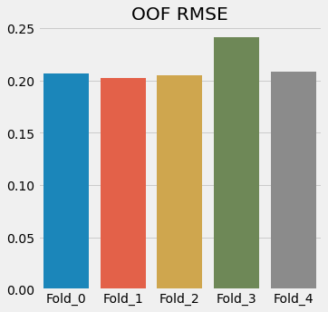

Meet’s code¶
1. Import Necessary Libraries¶
import warnings
warnings.filterwarnings('ignore')
import os, gc
import numpy as np
import pandas as pd
from collections import defaultdict,Counter
import random
import matplotlib.pyplot as plt
import seaborn as sns
plt.style.use('fivethirtyeight')
import tensorflow as tf
import tensorflow_addons as tfa
import keras.backend as K
print("Tensorflow version: ",tf.__version__)
# from transformers import *
from sklearn.model_selection import StratifiedKFold, KFold, GroupKFold
from sklearn.metrics import mean_squared_error
from tqdm import tqdm
import itertools
SEED = 2020
def seed_everything(SEED):
np.random.seed(SEED)
tf.random.set_seed(SEED)
os.environ['PYTHONHASHSEED'] = str(SEED)
seed_everything(SEED)
---------------------------------------------------------------------------
ModuleNotFoundError Traceback (most recent call last)
<ipython-input-1-2737a4e9de27> in <module>
14
15 import tensorflow as tf
---> 16 import tensorflow_addons as tfa
17 import keras.backend as K
18 print("Tensorflow version: ",tf.__version__)
ModuleNotFoundError: No module named 'tensorflow_addons'
AUGMENTED = True
OHE = False
2. Load Data¶
PATH = '/kaggle/input/stanford-covid-vaccine'
os.listdir(PATH)
['test.json', 'train.json', 'sample_submission.csv', 'bpps']
train = pd.read_json(os.path.join(PATH,'train.json'),lines=True).drop('index',axis=1)
test = pd.read_json(os.path.join(PATH,'test.json'),lines=True).drop('index',axis=1)
sub = pd.read_csv(os.path.join(PATH,'sample_submission.csv'))
if AUGMENTED:
train = pd.read_json('../input/openvaccine/train.json').drop('index',axis=1)
test = pd.read_json('../input/openvaccine/test.json').drop('index',axis=1)
test = test[test.cnt==1]
def get_bppm(id_):
return np.load(os.path.join(PATH,f"bpps/{id_}.npy"))
train.head().T
| 0 | 1 | 2 | 3 | 4 | |
|---|---|---|---|---|---|
| level_0 | 0 | 1 | 2 | 3 | 4 |
| id | id_001f94081 | id_0049f53ba | id_006f36f57 | id_0082d463b | id_0087940f4 |
| sequence | GGAAAAGCUCUAAUAACAGGAGACUAGGACUACGUAUUUCUAGGUA... | GGAAAAAGCGCGCGCGGUUAGCGCGCGCUUUUGCGCGCGCUGUACC... | GGAAAGUGCUCAGAUAAGCUAAGCUCGAAUAGCAAUCGAAUAGAAU... | GGAAAAGCGCGCGCGCGCGCGCGAAAAAGCGCGCGCGCGCGCGCGC... | GGAAAAUAUAUAAUAUAUUAUAUAAAUAUAUUAUAGAAGUAUAAUA... |
| structure | .....((((((.......)))).)).((.....((..((((((...... | .....(((((((((((((((((((((((....)))))))))).)))... | .....((((.((.....((((.(((.....)))..((((......)... | ......((((((((((((((((......))))))))))))))))((... | .....(((((((.((((((((((((.(((((((((....)))))))... |
| signal_to_noise | 6.894 | 0.193 | 8.8 | 0.104 | 0.423 |
| SN_filter | 1 | 0 | 1 | 0 | 0 |
| seq_length | 107 | 107 | 107 | 107 | 107 |
| seq_scored | 68 | 68 | 68 | 68 | 68 |
| reactivity_error | [0.1359, 0.20700000000000002, 0.1633, 0.1452, ... | [2.8272, 2.8272, 2.8272, 4.7343, 2.5676, 2.567... | [0.0931, 0.13290000000000002, 0.11280000000000... | [3.5229, 6.0748, 3.0374, 3.0374, 3.0374, 3.037... | [1.665, 2.1728, 2.0041, 1.2405, 0.620200000000... |
| deg_error_Mg_pH10 | [0.26130000000000003, 0.38420000000000004, 0.1... | [73705.3985, 73705.3985, 73705.3985, 73705.398... | [0.1365, 0.2237, 0.1812, 0.1333, 0.1148, 0.160... | [73705.3985, 73705.3985, 73705.3985, 73705.398... | [4.2139, 3.9637000000000002, 3.2467, 2.4716, 1... |
| deg_error_pH10 | [0.2631, 0.28600000000000003, 0.0964, 0.1574, ... | [10.1986, 9.2418, 5.0933, 5.0933, 5.0933, 5.09... | [0.17020000000000002, 0.178, 0.111, 0.091, 0.0... | [11.8007, 12.7566, 5.7733, 5.7733, 5.7733, 5.7... | [3.0942, 3.015, 2.1212, 2.0552, 0.881500000000... |
| deg_error_Mg_50C | [0.1501, 0.275, 0.0947, 0.18660000000000002, 0... | [16.6174, 13.868, 8.1968, 8.1968, 8.1968, 8.19... | [0.1033, 0.1464, 0.1126, 0.09620000000000001, ... | [121286.7181, 121286.7182, 121286.7181, 121286... | [2.6717, 2.4818, 1.9919, 2.5484999999999998, 1... |
| deg_error_50C | [0.2167, 0.34750000000000003, 0.188, 0.2124, 0... | [15.4857, 7.9596, 13.3957, 5.8777, 5.8777, 5.8... | [0.14980000000000002, 0.1761, 0.1517, 0.116700... | [15.3995, 8.1124, 7.7824, 7.7824, 7.7824, 7.78... | [1.3285, 3.6173, 1.3057, 1.3021, 1.1507, 1.150... |
| reactivity | [0.3297, 1.5693000000000001, 1.1227, 0.8686, 0... | [0.0, 0.0, 0.0, 2.2965, 0.0, 0.0, 0.0, 0.0, 0.... | [0.44820000000000004, 1.4822, 1.1819, 0.743400... | [0.0, 2.2399, 0.0, 0.0, 0.0, 0.0, 0.0, 0.0, 0.... | [0.8267, 2.6577, 2.8481, 0.40090000000000003, ... |
| deg_Mg_pH10 | [0.7556, 2.983, 0.2526, 1.3789, 0.637600000000... | [0.0, 0.0, 0.0, 0.0, 0.0, 0.0, 0.0, 0.0, 0.0, ... | [0.2504, 1.4021, 0.9804, 0.49670000000000003, ... | [0.0, -0.5083, 0.0, 0.0, 0.0, 0.0, 0.0, 0.0, 0... | [2.1058, 3.138, 2.5437000000000003, 1.0932, 0.... |
| deg_pH10 | [2.3375, 3.5060000000000002, 0.3008, 1.0108, 0... | [4.947, 4.4523, 0.0, 0.0, 0.0, 0.0, 0.0, 0.0, ... | [2.243, 2.9361, 1.0553, 0.721, 0.6396000000000... | [3.4248, 6.8128, 0.0, 0.0, 0.0, 0.0, 0.0, 0.0,... | [4.7366, 4.6243, 1.2068, 1.1538, 0.0, 0.0, 0.7... |
| deg_Mg_50C | [0.35810000000000003, 2.9683, 0.2589, 1.4552, ... | [4.8511, 4.0426, 0.0, 0.0, 0.0, 0.0, 0.0, 0.0,... | [0.5163, 1.6823000000000001, 1.0426, 0.7902, 0... | [0.0, -0.8365, 0.0, 0.0, 0.0, 0.0, 0.0, 0.0, 0... | [2.2052, 1.7947000000000002, 0.7457, 3.1233, 0... |
| deg_50C | [0.6382, 3.4773, 0.9988, 1.3228, 0.78770000000... | [7.6692, 0.0, 10.9561, 0.0, 0.0, 0.0, 0.0, 0.0... | [0.9501000000000001, 1.7974999999999999, 1.499... | [7.6692, -1.3223, 0.0, 0.0, 0.0, 0.0, 0.0, 0.0... | [0.0, 5.1198, -0.3551, -0.3518, 0.0, 0.0, 0.0,... |
| cnt | 1 | 1 | 1 | 1 | 1 |
| predicted_loop_type | EEEEESSSSSSHHHHHHHSSSSBSSXSSIIIIISSIISSSSSSHHH... | EEEEESSSSSSSSSSSSSSSSSSSSSSSHHHHSSSSSSSSSSBSSS... | EEEEESSSSISSIIIIISSSSMSSSHHHHHSSSMMSSSSHHHHHHS... | EEEEEESSSSSSSSSSSSSSSSHHHHHHSSSSSSSSSSSSSSSSSS... | EEEEESSSSSSSBSSSSSSSSSSSSBSSSSSSSSSHHHHSSSSSSS... |
| positional_entropy | [1.7836361789000001, 1.3220812925, 0.437422162... | [0.9360315124, 0.642767634, 0.3679182692000000... | [0.5490099148, 0.4246442945, 0.1903313657, 0.0... | [0.7474489873, 0.5149715144, 0.001054595, 0.00... | [0.3282294382, 0.5151187306, 0.479566674700000... |
| stems | [0.0560747664, 0.0560747664, 0.0560747664, 0.0... | [0.037383177600000005, 0.037383177600000005, 0... | [0.0560747664, 0.0560747664, 0.0560747664, 0.0... | [0.046728972, 0.046728972, 0.046728972, 0.0467... | [0.046728972, 0.046728972, 0.046728972, 0.0467... |
| interior_loops | [0.0280373832, 0.0280373832, 0.0280373832, 0.0... | [0.009345794400000001, 0.009345794400000001, 0... | [0.018691588800000002, 0.018691588800000002, 0... | [0.018691588800000002, 0.018691588800000002, 0... | [0.0280373832, 0.0280373832, 0.0280373832, 0.0... |
| multiloops | [0.018691588800000002, 0.018691588800000002, 0... | [0.018691588800000002, 0.018691588800000002, 0... | [0.037383177600000005, 0.037383177600000005, 0... | [0.018691588800000002, 0.018691588800000002, 0... | [0.009345794400000001, 0.009345794400000001, 0... |
| hairpin loops | [0.0280373832, 0.0280373832, 0.0280373832, 0.0... | [0.0280373832, 0.0280373832, 0.0280373832, 0.0... | [0.0280373832, 0.0280373832, 0.0280373832, 0.0... | [0.0280373832, 0.0280373832, 0.0280373832, 0.0... | [0.018691588800000002, 0.018691588800000002, 0... |
| fiveprimes | [0.009345794400000001, 0.009345794400000001, 0... | [0.009345794400000001, 0.009345794400000001, 0... | [0.009345794400000001, 0.009345794400000001, 0... | [0.009345794400000001, 0.009345794400000001, 0... | [0.009345794400000001, 0.009345794400000001, 0... |
| threeprimes | [0.009345794400000001, 0.009345794400000001, 0... | [0.009345794400000001, 0.009345794400000001, 0... | [0.009345794400000001, 0.009345794400000001, 0... | [0.009345794400000001, 0.009345794400000001, 0... | [0.009345794400000001, 0.009345794400000001, 0... |
| A_percent | [0.4205607477, 0.4205607477, 0.4205607477, 0.4... | [0.23364485980000002, 0.23364485980000002, 0.2... | [0.4018691589, 0.4018691589, 0.4018691589, 0.4... | [0.26168224300000004, 0.26168224300000004, 0.2... | [0.5420560748000001, 0.5420560748000001, 0.542... |
| G_percent | [0.1775700935, 0.1775700935, 0.1775700935, 0.1... | [0.308411215, 0.308411215, 0.308411215, 0.3084... | [0.2242990654, 0.2242990654, 0.2242990654, 0.2... | [0.3271028037, 0.3271028037, 0.3271028037, 0.3... | [0.0560747664, 0.0560747664, 0.0560747664, 0.0... |
| C_percent | [0.214953271, 0.214953271, 0.214953271, 0.2149... | [0.2990654206, 0.2990654206, 0.2990654206, 0.2... | [0.1869158879, 0.1869158879, 0.1869158879, 0.1... | [0.3271028037, 0.3271028037, 0.3271028037, 0.3... | [0.0560747664, 0.0560747664, 0.0560747664, 0.0... |
| U_percent | [0.1869158879, 0.1869158879, 0.1869158879, 0.1... | [0.1588785047, 0.1588785047, 0.1588785047, 0.1... | [0.1869158879, 0.1869158879, 0.1869158879, 0.1... | [0.0841121495, 0.0841121495, 0.0841121495, 0.0... | [0.3457943925, 0.3457943925, 0.3457943925, 0.3... |
| U-G | [0.0869565217, 0.0869565217, 0.0869565217, 0.0... | [0.030303030300000002, 0.030303030300000002, 0... | [0.0416666667, 0.0416666667, 0.0416666667, 0.0... | [0.0, 0.0, 0.0, 0.0, 0.0, 0.0, 0.0, 0.0, 0.0, ... | [0.0, 0.0, 0.0, 0.0, 0.0, 0.0, 0.0, 0.0, 0.0, ... |
| C-G | [0.1304347826, 0.1304347826, 0.1304347826, 0.1... | [0.3636363636, 0.3636363636, 0.3636363636, 0.3... | [0.2083333333, 0.2083333333, 0.2083333333, 0.2... | [0.4375, 0.4375, 0.4375, 0.4375, 0.4375, 0.437... | [0.0, 0.0, 0.0, 0.0, 0.0, 0.0, 0.0, 0.0, 0.0, ... |
| U-A | [0.2608695652, 0.2608695652, 0.2608695652, 0.2... | [0.030303030300000002, 0.030303030300000002, 0... | [0.2083333333, 0.2083333333, 0.2083333333, 0.2... | [0.0625, 0.0625, 0.0625, 0.0625, 0.0625, 0.062... | [0.4571428571, 0.4571428571, 0.4571428571, 0.4... |
| G-C | [0.347826087, 0.347826087, 0.347826087, 0.3478... | [0.3939393939, 0.3939393939, 0.3939393939, 0.3... | [0.2916666667, 0.2916666667, 0.2916666667, 0.2... | [0.40625000000000006, 0.40625000000000006, 0.4... | [0.0, 0.0, 0.0, 0.0, 0.0, 0.0, 0.0, 0.0, 0.0, ... |
| A-U | [0.1739130435, 0.1739130435, 0.1739130435, 0.1... | [0.12121212120000001, 0.12121212120000001, 0.1... | [0.125, 0.125, 0.125, 0.125, 0.125, 0.125, 0.1... | [0.03125, 0.03125, 0.03125, 0.03125, 0.03125, ... | [0.5428571429, 0.5428571429, 0.5428571429, 0.5... |
| G-U | [0.0, 0.0, 0.0, 0.0, 0.0, 0.0, 0.0, 0.0, 0.0, ... | [0.060606060600000004, 0.060606060600000004, 0... | [0.125, 0.125, 0.125, 0.125, 0.125, 0.125, 0.1... | [0.0625, 0.0625, 0.0625, 0.0625, 0.0625, 0.062... | [0.0, 0.0, 0.0, 0.0, 0.0, 0.0, 0.0, 0.0, 0.0, ... |
| E | [0.24299065420000002, 0.24299065420000002, 0.2... | [0.24299065420000002, 0.24299065420000002, 0.2... | [0.24299065420000002, 0.24299065420000002, 0.2... | [0.2523364486, 0.2523364486, 0.2523364486, 0.2... | [0.24299065420000002, 0.24299065420000002, 0.2... |
| S | [0.4299065421, 0.4299065421, 0.4299065421, 0.4... | [0.6168224299, 0.6168224299, 0.6168224299, 0.6... | [0.4485981308, 0.4485981308, 0.4485981308, 0.4... | [0.5981308411, 0.5981308411, 0.5981308411, 0.5... | [0.6542056075, 0.6542056075, 0.6542056075, 0.6... |
| H | [0.14018691590000001, 0.14018691590000001, 0.1... | [0.1028037383, 0.1028037383, 0.1028037383, 0.1... | [0.14018691590000001, 0.14018691590000001, 0.1... | [0.13084112150000002, 0.13084112150000002, 0.1... | [0.0747663551, 0.0747663551, 0.0747663551, 0.0... |
| B | [0.009345794400000001, 0.009345794400000001, 0... | [0.009345794400000001, 0.009345794400000001, 0... | [0.0, 0.0, 0.0, 0.0, 0.0, 0.0, 0.0, 0.0, 0.0, ... | [0.018691588800000002, 0.018691588800000002, 0... | [0.0280373832, 0.0280373832, 0.0280373832, 0.0... |
| X | [0.046728972, 0.046728972, 0.046728972, 0.0467... | [0.0280373832, 0.0280373832, 0.0280373832, 0.0... | [0.009345794400000001, 0.009345794400000001, 0... | [0.0, 0.0, 0.0, 0.0, 0.0, 0.0, 0.0, 0.0, 0.0, ... | [0.0, 0.0, 0.0, 0.0, 0.0, 0.0, 0.0, 0.0, 0.0, ... |
| I | [0.13084112150000002, 0.13084112150000002, 0.1... | [0.0, 0.0, 0.0, 0.0, 0.0, 0.0, 0.0, 0.0, 0.0, ... | [0.1121495327, 0.1121495327, 0.1121495327, 0.1... | [0.0, 0.0, 0.0, 0.0, 0.0, 0.0, 0.0, 0.0, 0.0, ... | [0.0, 0.0, 0.0, 0.0, 0.0, 0.0, 0.0, 0.0, 0.0, ... |
| M | [0.0, 0.0, 0.0, 0.0, 0.0, 0.0, 0.0, 0.0, 0.0, ... | [0.0, 0.0, 0.0, 0.0, 0.0, 0.0, 0.0, 0.0, 0.0, ... | [0.046728972, 0.046728972, 0.046728972, 0.0467... | [0.0, 0.0, 0.0, 0.0, 0.0, 0.0, 0.0, 0.0, 0.0, ... | [0.0, 0.0, 0.0, 0.0, 0.0, 0.0, 0.0, 0.0, 0.0, ... |
| pair_map | [-1.0, -1.0, -1.0, -1.0, -1.0, 0.2242990654, 0... | [-1.0, -1.0, -1.0, -1.0, -1.0, 0.5140186916, 0... | [-1.0, -1.0, -1.0, -1.0, -1.0, 0.6168224299, 0... | [-1.0, -1.0, -1.0, -1.0, -1.0, -1.0, 0.4018691... | [-1.0, -1.0, -1.0, -1.0, -1.0, 0.6261682243000... |
| pair_distance | [-1.0, -1.0, -1.0, -1.0, -1.0, 0.1775700935, 0... | [-1.0, -1.0, -1.0, -1.0, -1.0, 0.4672897196000... | [-1.0, -1.0, -1.0, -1.0, -1.0, 0.5700934579, 0... | [-1.0, -1.0, -1.0, -1.0, -1.0, -1.0, 0.3457943... | [-1.0, -1.0, -1.0, -1.0, -1.0, 0.5794392523, 0... |
| BPPS_Max | [0.021785699999999998, 0.0386527, 0.0275903999... | [0.1193148348, 0.0808186532, 0.0663817154, 0.0... | [0.0173400435, 0.0082656658, 0.0078466106, 0.0... | [0.0350158, 0.033229499999999995, 0.00272567, ... | [0.0223006011, 0.0522742234, 0.0520811939, 0.0... |
| BPPS_nb | [2.0659663786, 1.2272143578, -0.34544568140000... | [0.4933063395, 0.4933063395, -0.34544568140000... | [2.2756543838, 2.5901863917, 0.8078383473, 0.4... | [0.5981503421000001, 0.9126823499000001, -0.65... | [0.5981503421000001, 0.8078383473, 0.178774331... |
| BPPS_sum | [0.19854229, 0.1837122, 0.0600024, 0.01312221,... | [0.168836276, 0.1067594006, 0.0676473022000000... | [0.0668072416, 0.0443374869, 0.0203303692, 0.0... | [0.22702912, 0.18439387000000002, 0.0039987999... | [0.0403607546, 0.0802164279, 0.076875414, 0.07... |
3. Preprocessing¶
target_cols = ['reactivity', 'deg_Mg_pH10', 'deg_pH10', 'deg_Mg_50C', 'deg_50C']
feature_cols = ['sequence', 'structure', 'predicted_loop_type']
# Filter the train data
# train = train[train.signal_to_noise>1]
# train = train[train.SN_filter==1]
# def get_stratify_group(row):
# snf = row['SN_filter']
# snr = row['signal_to_noise']
# if snf == 0:
# if snr<0:
# snr_c = 0
# elif 0<= snr < 2:
# snr_c = 1
# elif 2<= snr < 4:
# snr_c = 2
# elif 4<= snr < 5.5:
# snr_c = 3
# elif 5.5<= snr < 10:
# snr_c = 4
# elif snr >= 10:
# snr_c = 5
# else: # snf == 1
# if snr<2.5:
# snr_c = 6
# elif 2.5<= snr < 7.5:
# snr_c = 7
# elif 7.5<= snr < 11:
# snr_c = 8
# elif snr >= 11:
# snr_c = 9
# return '{}'.format(snr_c)
def get_stratify_group(row):
snf = row['SN_filter']
snr = row['signal_to_noise']
if snf == 0:
if snr<0:
snr_c = 0
elif 0<= snr < 2:
snr_c = 1
elif 2<= snr < 4:
snr_c = 2
elif 4<= snr < 5.5:
snr_c = 3
elif 5.5<= snr < 10:
snr_c = 4
elif snr >= 10:
snr_c = 5
else: # snf == 1
if snr < 2:
snr_c = 6
elif 2<= snr < 3:
snr_c = 7
elif 3<= snr < 4:
snr_c = 8
elif 4<= snr < 5:
snr_c = 9
elif 5<= snr < 6:
snr_c = 10
elif 6<= snr < 7:
snr_c = 11
elif 7<= snr < 8:
snr_c = 12
elif 8<= snr < 9:
snr_c = 13
elif 9<= snr < 10:
snr_c = 14
elif snr >= 10:
snr_c = 15
return snr_c
train['snr_stratify_group'] = train.apply(get_stratify_group,axis=1)
# Some new features
# Next or Prev loop type
def getNextOrPrevLoop(df,NEXT=True):
data = []
for index in range(df.shape[0]):
predicted_loop_type = df.iloc[index]['predicted_loop_type']
if NEXT:
predicted_loop_type = predicted_loop_type[::-1]
prevLoop = '-'
nextLoop = [prevLoop]
for i in range(1,len(predicted_loop_type)):
curr = predicted_loop_type[i]
prev = predicted_loop_type[i-1]
if curr != prev:
prevLoop = prev
nextLoop.append(prevLoop)
if NEXT:
nextLoop = nextLoop[::-1]
data.append("".join(nextLoop))
return data
def getPairedWith(df):
data = []
bppsData = []
absDistData = []
# Adjacent pair type
prevPairData = []
nextPairData = []
for index in range(df.shape[0]):
sequence = df.iloc[index]['sequence']
structure = df.iloc[index]['structure']
bpps = get_bppm(df.iloc[index]['id'])
pairedWith = ['#']*len(sequence)
bpp = [-1]*len(sequence)
abs_dist = [-1]*len(sequence)
pairIndex = [-1]*len(sequence)
stack = []
for i in range(len(sequence)):
if structure[i] == '(':
stack.append(i)
elif structure[i] == ')':
j = stack.pop(-1)
pairIndex[i] = j
pairIndex[j] = i
pairedWith[j] = sequence[i]
pairedWith[i] = sequence[j]
bpp[j] = bpps[j][i]
bpp[i] = bpps[i][j]
abs_dist[j] = abs(i-j)
abs_dist[i] = abs(i-j)
prevPair = [-1]*len(sequence)
nextPair = [-1]*len(sequence)
for i in range(len(sequence)):
if i-1>=0 and pairIndex[i-1]!=-1:
prevPair[i] = (sequence[i-1],sequence[pairIndex[i-1]])
if i+1<len(sequence) and pairIndex[i+1]!=-1:
nextPair[i] = (sequence[i+1],sequence[pairIndex[i+1]])
prevPairData.append(prevPair)
nextPairData.append(nextPair)
data.append("".join(pairedWith))
bppsData.append(bpp)
absDistData.append(abs_dist)
return data, bppsData, absDistData, prevPairData, nextPairData
def getBPPFeatures(df):
maxs = []
means = []
argmaxs = []
sums = []
nonzero = []
for index in range(df.shape[0]):
bpps = get_bppm(df.iloc[index].id)
maxs.append(np.max(bpps,axis=-1))
means.append(np.mean(bpps,axis=-1))
argmaxs.append(np.argmax(bpps,axis=-1))
sums.append(np.sum(bpps,axis=-1))
nonzero.append((bpps>0).mean(axis=-1))
return maxs, means, argmaxs, sums, nonzero
def getNeighbourBPP(df):
dataB = [] # BPP with Prev Base
dataA = [] # BPP with Next Base
for index in range(df.shape[0]):
bpps = get_bppm(df.iloc[index].id)
seq_length = df.iloc[index].seq_length
B = [-1]*seq_length
A = [-1]*seq_length
for i in range(seq_length):
if i-1>=0:
B[i] = bpps[i][i-1]
if i+1<seq_length:
A[i] = bpps[i][i+1]
dataB.append(B)
dataA.append(A)
return dataB, dataA
# Minimum Pair Distance from Stem-ends
def getMinPairDist(df):
data = []
for index in range(df.shape[0]):
structure = df.iloc[index].structure
seq_length = df.iloc[index].seq_length
dist = [-1]*seq_length
a = 0
if structure[0] in ['(',')']:
dist[0] = a
for i in range(1,seq_length):
curr = structure[i]
if curr in ['(',')']:
if curr==structure[i-1]:
a += 1
else:
a = 0
dist[i] = a
structure = structure[::-1]
a = 0
if structure[0] in ['(',')']:
dist[seq_length - 0 - 1] = a
for i in range(1,seq_length):
curr = structure[i]
if curr in ['(',')']:
if curr==structure[i-1]:
a += 1
else:
a = 0
dist[seq_length - i-1] = min(a,dist[seq_length - i-1])
data.append(dist)
return data
"""https://www.kaggle.com/mrkmakr/covid-ae-pretrain-gnn-attn-cnn"""
def return_ohe(n, i):
tmp = [0] * n
tmp[i] = 1
return tmp
def getOHEInput(df):
## get node features, which is one hot encoded
mapping = {}
vocab = ["A", "G", "C", "U"]
for i, s in enumerate(vocab):
mapping[s] = return_ohe(len(vocab), i)
X_node = np.stack(df["sequence"].apply(lambda x : list(map(lambda y : mapping[y], list(x)))))
if 'pairedWith' in df.columns:
mapping = {}
vocab = ["A", "G", "C", "U", "#"]
for i, s in enumerate(vocab):
mapping[s] = return_ohe(len(vocab), i)
X_paired = np.stack(df['pairedWith'].apply(lambda x : list(map(lambda y : mapping[y], list(x)))))
X_node = np.concatenate([X_node,X_paired],axis=2)
mapping = {}
vocab = ["S", "M", "I", "B", "H", "E", "X"]
# if AUGMENTED:
# vocab = ['s','h','f','t','i','m']
for i, s in enumerate(vocab):
mapping[s] = return_ohe(len(vocab), i)
X_loop = np.stack(df["predicted_loop_type"].apply(lambda x : list(map(lambda y : mapping[y], list(x)))))
mapping = {}
vocab = [".", "(", ")"]
for i, s in enumerate(vocab):
mapping[s] = return_ohe(len(vocab), i)
X_structure = np.stack(df["structure"].apply(lambda x : list(map(lambda y : mapping[y], list(x)))))
X_node = np.concatenate([X_node, X_loop, X_structure], axis = 2)
## interaction
a = np.sum(X_node * (2 ** np.arange(X_node.shape[2])[None, None, :]), axis = 2)
vocab = sorted(set(a.flatten()))
# print(vocab)
ohes = []
for v in vocab:
ohes.append(a == v)
ohes = np.stack(ohes, axis = 2)
X_node = np.concatenate([X_node, ohes], axis = 2).astype(np.float32)
# print(X_node.shape)
return X_node
s = set(['A','C','G','U'])
pairTypeDict = dict(zip(list(itertools.product(s,s)),range(len(s)**2)))
pairTypeDict
{('C', 'C'): 0,
('C', 'G'): 1,
('C', 'A'): 2,
('C', 'U'): 3,
('G', 'C'): 4,
('G', 'G'): 5,
('G', 'A'): 6,
('G', 'U'): 7,
('A', 'C'): 8,
('A', 'G'): 9,
('A', 'A'): 10,
('A', 'U'): 11,
('U', 'C'): 12,
('U', 'G'): 13,
('U', 'A'): 14,
('U', 'U'): 15}
new_features = []
separate_features = []
# train['nextLoopType'] = getNextOrPrevLoop(train)
# train['prevLoopType'] = getNextOrPrevLoop(train,NEXT=False)
# test['nextLoopType'] = getNextOrPrevLoop(test)
# test['prevLoopType'] = getNextOrPrevLoop(test,NEXT=False)
# new_features += ['nextLoopType','prevLoopType']
train_pw_f = getPairedWith(train)
test_pw_f = getPairedWith(test)
train['pairedWith'],test['pairedWith'] = train_pw_f[0], test_pw_f[0]; new_features += ['pairedWith']
train['bpp'], test['bpp'] = train_pw_f[1], test_pw_f[1]; separate_features += ['bpp']
train['abs_dist'], test['abs_dist'] = train_pw_f[2], test_pw_f[2]; separate_features += ['abs_dist']
feature_cols += new_features
train_bpp_f = getBPPFeatures(train)
test_bpp_f = getBPPFeatures(test)
train_neighbour_bpp = getNeighbourBPP(train)
test_neighbour_bpp = getNeighbourBPP(test)
train['bpp_maxs'], test['bpp_maxs'] = train_bpp_f[0], test_bpp_f[0]; separate_features += ['bpp_maxs']
train['bpp_means'], test['bpp_means'] = train_bpp_f[1], test_bpp_f[1]; separate_features += ['bpp_means']
# train['bpp_argmaxs'], test['bpp_argmaxs'] = train_bpp_f[2], test_bpp_f[2]; separate_features += ['bpp_argmaxs']
train['bpp_sums'], test['bpp_sums'] = train_bpp_f[3], test_bpp_f[3]; separate_features += ['bpp_sums']
# train['bpp_before'], test['bpp_before'] = train_neighbour_bpp[0], test_neighbour_bpp[0]; separate_features += ['bpp_before']
train['bpp_after'], test['bpp_after'] = train_neighbour_bpp[1], test_neighbour_bpp[1]; separate_features += ['bpp_after']
train['bpp_nonzero'], test['bpp_nonzero'] = train_bpp_f[4], test_bpp_f[4]; separate_features += ['bpp_nonzero']
# Adjacent Pair Type
# train['prevPairType'], test['prevPairType'] = train_pw_f[3], test_pw_f[3]; separate_features += ['prevPairType']
# train[['prevPairType']] = train[['prevPairType']].applymap(lambda pairs: [pairTypeDict[pair] if pair!=-1 else -1 for pair in pairs])
# test[['prevPairType']] = test[['prevPairType']].applymap(lambda pairs: [pairTypeDict[pair] if pair!=-1 else -1 for pair in pairs])
# train['nextPairType'], test['nextPairType'] = train_pw_f[4], test_pw_f[4]; separate_features += ['nextPairType']
# train[['nextPairType']] = train[['nextPairType']].applymap(lambda pairs: [pairTypeDict[pair] if pair!=-1 else -1 for pair in pairs])
# test[['nextPairType']] = test[['nextPairType']].applymap(lambda pairs: [pairTypeDict[pair] if pair!=-1 else -1 for pair in pairs])
# train['min_pair_dist_from_stem_end'], test['min_pair_dist_from_stem_end'] = getMinPairDist(train), getMinPairDist(test); separate_features += ['min_pair_dist_from_stem_end']
train.head()
| level_0 | id | sequence | structure | signal_to_noise | SN_filter | seq_length | seq_scored | reactivity_error | deg_error_Mg_pH10 | ... | BPPS_sum | snr_stratify_group | pairedWith | bpp | abs_dist | bpp_maxs | bpp_means | bpp_sums | bpp_after | bpp_nonzero | |
|---|---|---|---|---|---|---|---|---|---|---|---|---|---|---|---|---|---|---|---|---|---|
| 0 | 0 | id_001f94081 | GGAAAAGCUCUAAUAACAGGAGACUAGGACUACGUAUUUCUAGGUA... | .....((((((.......)))).)).((.....((..((((((...... | 6.894 | 1 | 107 | 68 | [0.1359, 0.20700000000000002, 0.1633, 0.1452, ... | [0.26130000000000003, 0.38420000000000004, 0.1... | ... | [0.19854229, 0.1837122, 0.0600024, 0.01312221,... | 7 | #####UCGAGG#######UCUC#GA#CC#####CA##AAGGUC###... | [-1, -1, -1, -1, -1, 0.069899, 0.114792, 0.356... | [-1, -1, -1, -1, -1, 19, 17, 14, 12, 10, 8, -1... | [0.0217857, 0.0386527, 0.0275904, 0.00947066, ... | [0.0018555354205607479, 0.001716936448598131, ... | [0.19854229, 0.18371220000000002, 0.0600024000... | [0.0, 0.0, 0.0, 0.0, 0.0, 0.0, 0.00529508, 0.0... | [0.2616822429906542, 0.18691588785046728, 0.04... |
| 1 | 1 | id_0049f53ba | GGAAAAAGCGCGCGCGGUUAGCGCGCGCUUUUGCGCGCGCUGUACC... | .....(((((((((((((((((((((((....)))))))))).)))... | 0.193 | 0 | 107 | 68 | [2.8272, 2.8272, 2.8272, 4.7343, 2.5676, 2.567... | [73705.3985, 73705.3985, 73705.3985, 73705.398... | ... | [0.168836276, 0.1067594006, 0.0676473022000000... | 1 | #####UUCGCGCGCGCCAGUCGCGCGCG####CGCGCGCGAU#UGG... | [-1, -1, -1, -1, -1, 0.8560338026180186, 0.980... | [-1, -1, -1, -1, -1, 50, 48, 46, 44, 42, 40, 3... | [0.11931483477784201, 0.0808186531761711, 0.06... | [0.0015779091218742912, 0.0009977514074258377,... | [0.16883627604054915, 0.10675940059456464, 0.0... | [0.0, 0.0, 0.0, 0.0, 0.0, 0.0, 0.0, 0.0, 0.0, ... | [0.12149532710280374, 0.12149532710280374, 0.0... |
| 2 | 2 | id_006f36f57 | GGAAAGUGCUCAGAUAAGCUAAGCUCGAAUAGCAAUCGAAUAGAAU... | .....((((.((.....((((.(((.....)))..((((......)... | 8.800 | 1 | 107 | 68 | [0.0931, 0.13290000000000002, 0.11280000000000... | [0.1365, 0.2237, 0.1812, 0.1333, 0.1148, 0.160... | ... | [0.0668072416, 0.0443374869, 0.0203303692, 0.0... | 8 | #####UAUG#GU#####CGAU#CGA#####UCG##AGCU######A... | [-1, -1, -1, -1, -1, 0.2826784555573699, 0.298... | [-1, -1, -1, -1, -1, 61, 59, 57, 55, -1, 51, 4... | [0.017340043515196805, 0.00826566577930985, 0.... | [0.0006243667443574299, 0.0004143690368910073,... | [0.06680724164624499, 0.04433748694733778, 0.0... | [0.0, 0.0, 0.0, 0.0, 0.0, 0.0, 0.0, 0.0, 0.0, ... | [0.2803738317757009, 0.308411214953271, 0.1495... |
| 3 | 3 | id_0082d463b | GGAAAAGCGCGCGCGCGCGCGCGAAAAAGCGCGCGCGCGCGCGCGC... | ......((((((((((((((((......))))))))))))))))((... | 0.104 | 0 | 107 | 68 | [3.5229, 6.0748, 3.0374, 3.0374, 3.0374, 3.037... | [73705.3985, 73705.3985, 73705.3985, 73705.398... | ... | [0.22702912, 0.18439387000000002, 0.0039987999... | 1 | ######CGCGCGCGCGCGCGCG######CGCGCGCGCGCGCGCGCG... | [-1, -1, -1, -1, -1, -1, 0.271764, 0.29096, 0.... | [-1, -1, -1, -1, -1, -1, 37, 35, 33, 31, 29, 2... | [0.0350158, 0.0332295, 0.00272567, 0.0, 0.0, 0... | [0.002121767476635514, 0.0017233071962616823, ... | [0.22702912000000003, 0.18439387000000002, 0.0... | [0.0, 0.0, 0.0, 0.0, 0.0, 0.0, 0.0, 0.0, 0.0, ... | [0.1308411214953271, 0.1588785046728972, 0.018... |
| 4 | 4 | id_0087940f4 | GGAAAAUAUAUAAUAUAUUAUAUAAAUAUAUUAUAGAAGUAUAAUA... | .....(((((((.((((((((((((.(((((((((....)))))))... | 0.423 | 0 | 107 | 68 | [1.665, 2.1728, 2.0041, 1.2405, 0.620200000000... | [4.2139, 3.9637000000000002, 3.2467, 2.4716, 1... | ... | [0.0403607546, 0.0802164279, 0.076875414, 0.07... | 1 | #####UAUAUAU#AUAUAAUAUAUU#AUAUAAUAU####AUAUUAU... | [-1, -1, -1, -1, -1, 0.494291722659322, 0.7353... | [-1, -1, -1, -1, -1, 62, 60, 58, 56, 54, 52, 5... | [0.02230060114516417, 0.052274223411953764, 0.... | [0.00037720331356832457, 0.0007496862422422686... | [0.04036075455181073, 0.08021642791992274, 0.0... | [0.0, 0.0, 0.0, 0.0, 0.0, 0.0, 0.0, 0.0, 0.0, ... | [0.1308411214953271, 0.14953271028037382, 0.09... |
5 rows × 58 columns
token2int = {x:i for i, x in enumerate('#().ACGUBEHIMSX')}
# if AUGMENTED:
# token2int = {x:i for i, x in enumerate('#().ACGUshftim')}
def preprocess_inputs(df, cols=feature_cols, sep=separate_features, token2int=token2int):
if OHE:
X_f = getOHEInput(df[cols])
X_s = np.transpose(
np.array(
df[sep]
.values
.tolist()
),
(0, 2, 1)
)
return np.concatenate([X_f, X_s], axis = 2).astype(np.float32)
df1 = df[cols].applymap(lambda seq: [token2int[x] for x in seq])
df2 = df[sep]
return np.transpose(
np.array(
pd.concat([df1,df2],axis=1)
.values
.tolist()
),
(0, 2, 1)
)
X = preprocess_inputs(train,feature_cols)
if AUGMENTED:
train[target_cols] = train[target_cols].applymap(lambda x: x[1:-1].split(", "))
y = np.array(train[target_cols].values.tolist(),dtype=np.float32).transpose((0, 2, 1))
print("Shape of X: ",X.shape)
print("Shape of y: ",y.shape)
Shape of X: (3948, 107, 11)
Shape of y: (3948, 68, 5)
public_df = test.query("seq_length == 107").copy()
private_df = test.query("seq_length == 130").copy()
X_public = preprocess_inputs(public_df,feature_cols)
X_private = preprocess_inputs(private_df,feature_cols)
print("Public Test size: ",X_public.shape)
print("Private Test size: ",X_private.shape)
assert X_public.shape[1:] == X.shape[1:], "Train & Test features shape not same"
Public Test size: (629, 107, 11)
Private Test size: (3005, 130, 11)
4. Model¶
try:
tpu = tf.distribute.cluster_resolver.TPUClusterResolver() # TPU detection
except ValueError:
tpu = None
#If TPU not found try with GPUs
gpus = tf.config.experimental.list_logical_devices("GPU")
# Select appropriate distribution strategy for hardware
if tpu:
tf.config.experimental_connect_to_cluster(tpu)
tf.tpu.experimental.initialize_tpu_system(tpu)
strategy = tf.distribute.experimental.TPUStrategy(tpu)
print('Running on TPU ', tpu.master())
elif len(gpus) > 0:
strategy = tf.distribute.MirroredStrategy(gpus) # this works for 1 to multiple GPUs
print('Running on ', len(gpus), ' GPU(s) ')
else:
strategy = tf.distribute.get_strategy()
print('Running on CPU')
# How many accelerators do we have ?
print("Number of accelerators: ", strategy.num_replicas_in_sync)
AUTO = tf.data.experimental.AUTOTUNE
REPLICAS = strategy.num_replicas_in_sync
Running on 1 GPU(s)
Number of accelerators: 1
FOLDS = 5
EPOCHS = 100
BATCH_SIZE = 32
VERBOSE = 2
LR = 0.00004
WARMUP = 5
CYCLIC_LRS = True
CYCLIC_BLR = 1e-3
CYCLIC_MLR = 8e-3
CYCLIC_STEP = int((FOLDS-1)*(X.shape[0]/(FOLDS*BATCH_SIZE))*8)
print("Cyclic Step: ",CYCLIC_STEP)
EXPDECAY_LRS = False
EXP_LRSTART = 5e-3
EXP_LRMAX = 1.25e-2
EXP_LRMIN = 1e-3
EXP_RAMPUP = 5
EXP_SUSTAIN = 2
EXP_DECAY = 0.8
INFER_TEST = True
DISPLAY_PLOT = True
DROPOUT = 0.4
EMBED_DIM = 100
TRANSFORMERS = False
SKF_SNR = True
print("Replicas: ",REPLICAS)
Cyclic Step: 789
Replicas: 1
# Gaussian Noise
P = 0.0
def add_noise(X,y):
if np.random.choice([True,False],p=[P,1-P]):
y += tf.random.normal(tf.shape(y), 0, 1, tf.float32,seed=SEED)
return X, y
def getTrainGenerator(X_,y_):
traindata_generator = (
tf.data.Dataset.from_tensor_slices((X_,y_))
.cache()
.map(add_noise,num_parallel_calls=AUTO)
.batch(BATCH_SIZE*REPLICAS)
.prefetch(AUTO)
)
return traindata_generator
def rmse(y_actual, y_pred):
mse = tf.keras.losses.mean_squared_error(y_actual, y_pred)
return K.sqrt(mse)
def mcrmse(y_actual, y_pred, num_scored=len(target_cols)):
score = 0
for i in range(num_scored):
score += rmse(y_actual[:, :, i], y_pred[:, :, i]) / num_scored
return score
Positional Encoding¶
def get_angles(pos, i, d_model):
angle_rates = 1 / np.power(10000, (2 * (i//2)) / np.float32(d_model))
return pos * angle_rates
def positional_encoding(position, d_model):
angle_rads = get_angles( np.arange(position)[:, np.newaxis], np.arange(d_model)[np.newaxis, :], d_model)
# apply sin to even indices in the array; 2i
angle_rads[:, 0::2] = np.sin(angle_rads[:, 0::2])
# apply cos to odd indices in the array; 2i+1
angle_rads[:, 1::2] = np.cos(angle_rads[:, 1::2])
pos_encoding = angle_rads[np.newaxis, ...]
return tf.cast(pos_encoding, dtype=tf.float32)
Multiheaded Attention¶
class MultiHeadAttention(tf.keras.layers.Layer):
def __init__(self, d_model = 512, num_heads = 8, causal=False, dropout=0.0):
super(MultiHeadAttention, self).__init__()
assert d_model % num_heads == 0
depth = d_model // num_heads
self.w_query = tf.keras.layers.Dense(d_model)
self.split_reshape_query = tf.keras.layers.Reshape((-1,num_heads,depth))
self.split_permute_query = tf.keras.layers.Permute((2,1,3))
self.w_value = tf.keras.layers.Dense(d_model)
self.split_reshape_value = tf.keras.layers.Reshape((-1,num_heads,depth))
self.split_permute_value = tf.keras.layers.Permute((2,1,3))
self.w_key = tf.keras.layers.Dense(d_model)
self.split_reshape_key = tf.keras.layers.Reshape((-1,num_heads,depth))
self.split_permute_key = tf.keras.layers.Permute((2,1,3))
self.attention = tf.keras.layers.Attention(causal=causal, dropout=dropout)
self.join_permute_attention = tf.keras.layers.Permute((2,1,3))
self.join_reshape_attention = tf.keras.layers.Reshape((-1,d_model))
self.dense = tf.keras.layers.Dense(d_model)
def call(self, inputs, mask=None, training=None):
q = inputs[0]
v = inputs[1]
k = inputs[2] if len(inputs) > 2 else v
query = self.w_query(q)
query = self.split_reshape_query(query)
query = self.split_permute_query(query)
value = self.w_value(v)
value = self.split_reshape_value(value)
value = self.split_permute_value(value)
key = self.w_key(k)
key = self.split_reshape_key(key)
key = self.split_permute_key(key)
if mask is not None:
if mask[0] is not None:
mask[0] = tf.keras.layers.Reshape((-1,1))(mask[0])
mask[0] = tf.keras.layers.Permute((2,1))(mask[0])
if mask[1] is not None:
mask[1] = tf.keras.layers.Reshape((-1,1))(mask[1])
mask[1] = tf.keras.layers.Permute((2,1))(mask[1])
attention = self.attention([query, value, key], mask=mask)
attention = self.join_permute_attention(attention)
attention = self.join_reshape_attention(attention)
x = self.dense(attention)
return x
def get_config(self):
config = super().get_config().copy()
config.update({
'w_q': self.w_query,
's_r_q':self.split_reshape_query,
's_p_q':self.split_permute_query,
'w_v':self.w_value,
's_r_v':self.split_reshape_value,
's_p_v':self.split_permute_value,
'w_k':self.w_key,
's_r_k':self.split_reshape_key,
's_p_k':self.split_permute_key,
'attn':self.attention,
'p_attn':self.join_permute_attention,
'r_attn':self.join_reshape_attention,
'dense':self.dense
})
return config
Encoder-Layer¶
class EncoderLayer(tf.keras.layers.Layer):
def __init__(self, d_model = 512, num_heads = 8, dff = 2048, dropout = 0.0):
super(EncoderLayer, self).__init__()
self.multi_head_attention = MultiHeadAttention(d_model, num_heads)
self.dropout_attention = tf.keras.layers.Dropout(dropout)
self.add_attention = tf.keras.layers.Add()
self.layer_norm_attention = tf.keras.layers.LayerNormalization(epsilon=1e-6)
self.dense1 = tf.keras.layers.Dense(dff, activation='relu')
self.dense2 = tf.keras.layers.Dense(d_model)
self.dropout_dense = tf.keras.layers.Dropout(dropout)
self.add_dense = tf.keras.layers.Add()
self.layer_norm_dense = tf.keras.layers.LayerNormalization(epsilon=1e-6)
def call(self, inputs, mask=None, training=None):
# print(mask)
attention = self.multi_head_attention([inputs,inputs,inputs], mask = [mask,mask])
attention = self.dropout_attention(attention, training = training)
x = self.add_attention([inputs , attention])
x = self.layer_norm_attention(x)
# x = inputs
## Feed Forward
dense = self.dense1(x)
dense = self.dense2(dense)
dense = self.dropout_dense(dense, training = training)
x = self.add_dense([x , dense])
x = self.layer_norm_dense(x)
return x
def get_config(self):
config = super().get_config().copy()
config.update({
'mha': self.multi_head_attention,
'drop_attn': self.dropout_attention,
'add_attn': self.add_attention,
'ln_attn': self.layer_norm_attention,
'dense1': self.dense1,
'dense2': self.dense2,
'drop_dense': self.dropout_dense,
'add_dense': self.add_dense,
'ln_dense': self.layer_norm_dense
})
return config
GRU-LSTMs¶
def gru_layer(hidden_dim, dropout):
return tf.keras.layers.Bidirectional(
tf.keras.layers.GRU(hidden_dim,
dropout=dropout,
return_sequences=True,
kernel_initializer='orthogonal'))
def lstm_layer(hidden_dim, dropout):
return tf.keras.layers.Bidirectional(
tf.keras.layers.LSTM(hidden_dim,
dropout=dropout,
return_sequences=True,
kernel_initializer='orthogonal'))
def res(x, unit, kernel = 3, rate = 0.1):
h = tf.keras.layers.Conv1D(unit, kernel, 1, padding = "same", activation = None)(x)
h = tf.keras.layers.LayerNormalization()(h)
h = tf.keras.layers.LeakyReLU()(h)
h = tf.keras.layers.Dropout(rate)(h)
return tf.keras.layers.Add()([x, h])
def forward(x, unit, kernel = 3, rate = 0.1):
# h = L.Dense(unit, None)(x)
h = tf.keras.layers.Conv1D(unit, kernel, 1, padding = "same", activation = None)(x)
h = tf.keras.layers.LayerNormalization()(h)
h = tf.keras.layers.Dropout(rate)(h)
# h = tf.keras.activations.swish(h)
h = tf.keras.layers.LeakyReLU()(h)
h = res(h, unit, kernel, rate)
return h
def build_model(seq_len=107, pred_len=68, dropout=DROPOUT,
embed_dim=EMBED_DIM, hidden_dim=128):
inputs = tf.keras.layers.Input(shape=(seq_len, X.shape[2]))
fs = len(feature_cols)
if OHE:
fs = X.shape[2] - len(separate_features)
# conv1 = forward(inputs[:,:,:fs], 256, 3, 0.0)
conv1 = tf.keras.layers.Conv1D(256, 3, padding='same', activation='elu')(inputs[:,:,:fs])
# conv2 = tf.keras.layers.Conv1D(128, 6, padding='same', activation='elu')(conv1)
# conv3 = tf.keras.layers.Conv1D(32, 12, padding='same', activation='elu')(conv2)
# conv4 = tf.keras.layers.Conv1D(16, 24, padding='same', activation='elu')(conv3)
# hidden = tf.keras.layers.Concatenate(axis=-1)([conv1,conv2])
hidden = tf.keras.layers.SpatialDropout1D(.2)(conv1)
else:
embed = tf.keras.layers.Embedding(input_dim=len(token2int), output_dim=embed_dim)(inputs[:,:,:fs])
reshaped = tf.reshape(embed, shape=(-1, embed.shape[1], embed.shape[2] * embed.shape[3]))
hidden = tf.keras.layers.SpatialDropout1D(.2)(reshaped)
if len(separate_features)==1:
hidden = tf.keras.layers.Concatenate(axis=-1)([hidden,tf.keras.backend.expand_dims(inputs[:,:,fs:],axis=-1)])
else:
hidden = tf.keras.layers.Concatenate(axis=-1)([hidden,inputs[:,:,fs:]])
# conv1 = forward(hidden, 256, 3, 0.0)
conv1 = tf.keras.layers.Conv1D(256, 3, padding='same', activation='elu')(hidden)
hidden = gru_layer(hidden_dim, dropout)(conv1)
hidden = tf.keras.layers.Concatenate(axis=-1)([hidden,conv1])
# hidden = gru_layer(hidden_dim, dropout)(hidden)
# hidden = gru_layer(hidden_dim, dropout)(hidden)
# hidden = gru_layer(hidden_dim, dropout)(hidden)
hidden = gru_layer(hidden_dim, dropout)(hidden)
hidden = gru_layer(hidden_dim, dropout)(hidden)
# hidden = lstm_layer(hidden_dim, dropout)(hidden)
# BLOCK 1
# hidden_1 = gru_layer(hidden_dim, dropout)(hidden)
# hidden_1 = gru_layer(hidden_dim, dropout)(hidden_1)
# hidden_1 = gru_layer(hidden_dim, dropout)(hidden_1)
# BLOCK 2
# hidden_2 = lstm_layer(hidden_dim, dropout)(hidden)
# hidden_2 = lstm_layer(hidden_dim, dropout)(hidden_2)
# hidden_2 = lstm_layer(hidden_dim, dropout)(hidden_2)
# BLOCK 3
# hidden_3 = gru_layer(hidden_dim, dropout)(hidden)
# hidden_3 = lstm_layer(hidden_dim, dropout)(hidden_3)
# hidden_3 = gru_layer(hidden_dim, dropout)(hidden_3)
# BLOCK 4
# hidden_4 = lstm_layer(hidden_dim, dropout)(hidden)
# hidden_4 = gru_layer(hidden_dim, dropout)(hidden_4)
# hidden_4 = lstm_layer(hidden_dim, dropout)(hidden_4)
#only making predictions on the first part of each sequence
# truncated_1 = hidden_1[:, :pred_len]
# truncated_2 = hidden_2[:, :pred_len]
# truncated_3 = hidden_3[:, :pred_len]
# truncated_4 = hidden_4[:, :pred_len]
# out_1 = tf.keras.layers.Dense(5, activation='linear')(truncated_1)
# out_2 = tf.keras.layers.Dense(5, activation='linear')(truncated_2)
# out_3 = tf.keras.layers.Dense(5, activation='linear')(truncated_3)
# out_4 = tf.keras.layers.Dense(5, activation='linear')(truncated_4)
# out = tf.keras.layers.Concatenate(axis=-1)([truncated_1,truncated_2,truncated_3,truncated_4])
# out = tf.keras.layers.Dense(128, activation='elu')(out)
# out = tf.keras.layers.Dropout(0.4)(out)
# out = tf.keras.layers.Dense(5, activation='linear')(out)
# hidden = tf.keras.layers.Conv1D(512, 3, padding='same', activation='elu')(hidden)
truncated = hidden[:, :pred_len]
out = tf.keras.layers.Dense(5, activation='linear')(truncated)
model = tf.keras.Model(inputs=inputs, outputs=out)
#some optimizers
adam = tf.optimizers.Adam()
radam = tfa.optimizers.RectifiedAdam()
lookahead = tfa.optimizers.Lookahead(adam, sync_period=6)
ranger = tfa.optimizers.Lookahead(radam, sync_period=6)
model.compile(optimizer=adam, loss=mcrmse)
return model
Transformers¶
def build_transformer(hidden_dim=128,seq_len=107, pred_len=68, embed_dim=100, d_model = 128, num_heads = 4, dff = 256, maximum_position_encoding = 10000, dropout = 0.4):
inputs = tf.keras.layers.Input(shape=(seq_len, X.shape[2]))
# Input Embeddings
fs = len(feature_cols)
if OHE:
fs = X.shape[2] - len(separate_features)
conv1 = tf.keras.layers.Conv1D(256, 3, padding='same', activation='elu')(inputs[:,:,:fs])
hidden = tf.keras.layers.SpatialDropout1D(.2)(conv1)
else:
embed = tf.keras.layers.Embedding(input_dim=len(token2int), output_dim=embed_dim)(inputs[:,:,:fs])
reshaped = tf.reshape(embed, shape=(-1, embed.shape[1], embed.shape[2] * embed.shape[3]))
hidden = tf.keras.layers.SpatialDropout1D(.2)(reshaped)
if len(separate_features)==1:
hidden = tf.keras.layers.Concatenate(axis=-1)([hidden,tf.keras.backend.expand_dims(inputs[:,:,fs:],axis=-1)])
else:
hidden = tf.keras.layers.Concatenate(axis=-1)([hidden,inputs[:,:,fs:]])
# Input Embeddings
# embedding = tf.keras.layers.Embedding(input_dim=len(token2int), output_dim=embed_dim)(inputs[:,:,:len(feature_cols)])
# reshaped = tf.reshape(embedding, shape=(-1, embedding.shape[1], embedding.shape[2] * embedding.shape[3]))
# hidden = tf.keras.layers.SpatialDropout1D(.2)(reshaped)
# Numerical Features
# if len(separate_features)==1:
# hidden = tf.keras.layers.Concatenate(axis=-1)([hidden,tf.keras.backend.expand_dims(inputs[:,:,len(feature_cols):],axis=-1)])
# else:
# hidden = tf.keras.layers.Concatenate(axis=-1)([hidden,inputs[:,:,len(feature_cols):]])
x = tf.keras.layers.Conv1D(d_model, 3, padding='same', activation='elu')(hidden)
# RNNs
x = gru_layer(d_model//2, dropout)(x)
x = lstm_layer(d_model, dropout)(x)
x = gru_layer(d_model//2, dropout)(x)
# Positional Encoding
# scaling_factor = tf.keras.backend.constant(np.sqrt(d_model), shape = (1,1,1))
# x = tf.keras.layers.Multiply()([x,scaling_factor])
# pos = positional_encoding(maximum_position_encoding, d_model)
# x = tf.keras.layers.Add()([x, pos[: , :tf.shape(x)[1], :]])
# Encoding Layers
x = EncoderLayer(d_model, num_heads, dff, dropout)(x)
# x = EncoderLayer(d_model, num_heads, dff, dropout)(x)
# RNNs
# x = gru_layer(d_model//2, dropout)(x)
# x = gru_layer(d_model//2, dropout)(x)
# FFN
truncated = x[:,:pred_len,:]
out = tf.keras.layers.Dense(5,activation='linear')(truncated)
# Model
model = tf.keras.Model(inputs=inputs, outputs=out)
# Optimizers
adam = tf.optimizers.Adam()
radam = tfa.optimizers.RectifiedAdam()
lookahead = tfa.optimizers.Lookahead(adam, sync_period=6)
ranger = tfa.optimizers.Lookahead(radam, sync_period=6)
# Compilation
model.compile(optimizer=adam, loss=mcrmse)
return model
if not TRANSFORMERS:
plot = tf.keras.utils.plot_model(build_model(),show_shapes=True)
else:
plot = tf.keras.utils.plot_model(build_transformer(),show_shapes=True)
plot

5. LR Schedulers¶
def get_cosine_schedule_with_warmup(lr, num_warmup_steps, num_training_steps, num_cycles=0.5):
"""
Modified version of the get_cosine_schedule_with_warmup from huggingface.
(https://huggingface.co/transformers/_modules/transformers/optimization.html#get_cosine_schedule_with_warmup)
Create a schedule with a learning rate that decreases following the
values of the cosine function between 0 and `pi * cycles` after a warmup
period during which it increases linearly between 0 and 1.
"""
def lrfn(epoch):
if epoch < num_warmup_steps:
return (float(epoch) / float(max(1, num_warmup_steps))) * lr
progress = float(epoch - num_warmup_steps) / float(max(1, num_training_steps - num_warmup_steps))
return max(0.0, 0.5 * (1.0 + math.cos(math.pi * float(num_cycles) * 2.0 * progress))) * lr
return tf.keras.callbacks.LearningRateScheduler(lrfn, verbose=True)
def build_lrfn(lr_start=EXP_LRSTART, lr_max=EXP_LRMAX,
lr_min=EXP_LRMIN, lr_rampup_epochs=EXP_RAMPUP,
lr_sustain_epochs=EXP_SUSTAIN, lr_exp_decay=EXP_DECAY):
lr_max = lr_max * BATCH_SIZE
def lrfn(epoch):
if epoch < lr_rampup_epochs:
lr = (lr_max - lr_start) / lr_rampup_epochs * epoch + lr_start
elif epoch < lr_rampup_epochs + lr_sustain_epochs:
lr = lr_max
else:
lr = (lr_max - lr_min) * lr_exp_decay**(epoch - lr_rampup_epochs - lr_sustain_epochs) + lr_min
return lr
return lrfn
class CyclicLR(tf.keras.callbacks.Callback):
def __init__(self,base_lr=0.25e-3,max_lr=1e-3,stepsize=8):
super().__init__()
self.base_lr = base_lr
self.max_lr = max_lr
self.stepsize = stepsize
self.iterations = 0
self.history = {}
def clr(self):
cycle = np.floor((1+self.iterations)/(2*self.stepsize))
x = np.abs(self.iterations/self.stepsize - 2*cycle + 1)
return self.base_lr + (self.max_lr - self.base_lr)*(np.maximum(0,1-x))*(1/(2.**(cycle-1)))
def on_train_begin(self,logs={}):
tf.keras.backend.set_value(self.model.optimizer.lr, self.base_lr)
def on_batch_end(self,batch,logs=None):
logs = logs or {}
self.iterations += 1
self.history.setdefault('lr', []).append(tf.keras.backend.get_value(self.model.optimizer.lr))
self.history.setdefault('iterations', []).append(self.iterations)
for k, v in logs.items():
self.history.setdefault(k, []).append(v)
tf.keras.backend.set_value(self.model.optimizer.lr, self.clr())
6. Training¶
Validation Scheme¶
def stratified_group_k_fold(X, y, groups, k, seed=None):
"""https://www.kaggle.com/jakubwasikowski/stratified-group-k-fold-cross-validation"""
labels_num = np.max(y)+1
y = y.astype('int32')
y_counts_per_group = defaultdict(lambda: np.zeros(labels_num))
y_distr = Counter()
for label, g in zip(y, groups):
y_counts_per_group[g][label] += 1
y_distr[label] += 1
y_counts_per_fold = defaultdict(lambda: np.zeros(labels_num))
groups_per_fold = defaultdict(set)
def eval_y_counts_per_fold(y_counts, fold):
y_counts_per_fold[fold] += y_counts
std_per_label = []
for label in range(labels_num):
label_std = np.std([y_counts_per_fold[i][label] / y_distr[label] for i in range(k)])
std_per_label.append(label_std)
y_counts_per_fold[fold] -= y_counts
return np.mean(std_per_label)
groups_and_y_counts = list(y_counts_per_group.items())
random.Random(seed).shuffle(groups_and_y_counts)
for g, y_counts in sorted(groups_and_y_counts, key=lambda x: -np.std(x[1])):
best_fold = None
min_eval = None
for i in range(k):
fold_eval = eval_y_counts_per_fold(y_counts, i)
if min_eval is None or fold_eval < min_eval:
min_eval = fold_eval
best_fold = i
y_counts_per_fold[best_fold] += y_counts
groups_per_fold[best_fold].add(g)
all_groups = set(groups)
for i in range(k):
train_groups = all_groups - groups_per_fold[i]
test_groups = groups_per_fold[i]
train_indices = [i for i, g in enumerate(groups) if g in train_groups]
test_indices = [i for i, g in enumerate(groups) if g in test_groups]
yield train_indices, test_indices
if len(tf.config.list_physical_devices('GPU')):
print('Training on GPU')
else:
print('Not on GPU')
Training on GPU
%%time
histories = []
private_preds = np.zeros((private_df.shape[0], 130, 5))
public_preds = np.zeros((public_df.shape[0], 107, 5))
oof_pred = []
oof_tar = []
oof_val = []
oof_ids = []
skf = StratifiedKFold(FOLDS, random_state = SEED)
skf_y = train['SN_filter']
if SKF_SNR:
print("#### Stratified on SNRs")
skf_y = train['snr_stratify_group']
print("unique SNR Groups: ",skf_y.nunique())
splits = skf.split(train, skf_y)
if AUGMENTED:
# splits = GroupKFold(FOLDS).split(train,groups=skf_y)
print("#### Grouped by train.ids")
splits = stratified_group_k_fold(train,skf_y,train.id,k=FOLDS,seed=SEED)
for fold, (idxT, idxV) in enumerate(splits):
print()
print("#"*50)
print("#### FOLD: ",fold)
X_train, y_train = X[idxT], y[idxT]
X_val, y_val = X[idxV], y[idxV]
# Filters of Validation Data
filter_ = train.iloc[idxV].SN_filter==1
if AUGMENTED:
filter_ = (train.iloc[idxV].SN_filter==1) & (train.iloc[idxV].cnt == 1)
X_val, y_val = X_val[filter_], y_val[filter_]
oof_ids.append(train.iloc[idxV][filter_]['id'].values)
oof_tar.append(y[idxV][filter_])
print("#### Train Shape: ",X_train.shape)
print("#### Validation Shape: ",X_val.shape)
# continue
# snr = train.iloc[idxT]['signal_to_noise'].values
# weights = np.abs(snr)
# weights[weights>1], weights[weights<1] = 1, 2
modelCheckpoint = tf.keras.callbacks.ModelCheckpoint(f'WEIGHTS_FOLD{fold}.h5',monitor='val_loss',mode='min')
csvLogger = tf.keras.callbacks.CSVLogger(f'TRAININGLOGS_FOLD{fold}.csv')
# LR SCHEDULE
lr_schedule = get_cosine_schedule_with_warmup(lr=LR,num_warmup_steps=WARMUP,num_training_steps=EPOCHS)
if CYCLIC_LRS:
lr_schedule = CyclicLR(base_lr=CYCLIC_BLR,max_lr=CYCLIC_MLR,stepsize=CYCLIC_STEP)
elif EXPDECAY_LRS:
lrfn = build_lrfn()
lr_schedule = tf.keras.callbacks.LearningRateScheduler(lrfn, verbose=1)
if not TRANSFORMERS:
model = build_model()
else:
model = build_transformer()
model.summary()
print()
print()
if AUGMENTED:
print("#### Training on Augmented Data: ")
history = model.fit(getTrainGenerator(X_train,y_train),
validation_data=(X_val,y_val),
batch_size=BATCH_SIZE,
epochs=EPOCHS,
# sample_weight = weights,
callbacks=[lr_schedule,modelCheckpoint,csvLogger],
verbose = VERBOSE)
else:
history = model.fit(X_train, y_train,
validation_data=(X_val,y_val),
batch_size=BATCH_SIZE,
epochs=EPOCHS,
# sample_weight = weights,
callbacks=[lr_schedule,modelCheckpoint,csvLogger],
verbose = VERBOSE)
histories.append(history)
model.load_weights(f'WEIGHTS_FOLD{fold}.h5')
# VAL PREDICTIONS
val_preds = model.predict(X_val)
oof_val.append(np.min(history.history['val_loss']))
oof_pred.append(val_preds)
if INFER_TEST:
#load best model and predict
if not TRANSFORMERS:
public_model = build_model(seq_len=107, pred_len=107)
else:
public_model = build_transformer(seq_len=107, pred_len=107)
public_model.load_weights(f'WEIGHTS_FOLD{fold}.h5')
public_pred = public_model.predict(X_public) / FOLDS
if not TRANSFORMERS:
private_model = build_model(seq_len=130, pred_len=130)
else:
private_model = build_transformer(seq_len=130, pred_len=130)
private_model.load_weights(f'WEIGHTS_FOLD{fold}.h5')
private_pred = private_model.predict(X_private) / FOLDS
public_preds += public_pred
private_preds += private_pred
del public_model, private_model
print("#"*50)
# PLOT TRAINING
if DISPLAY_PLOT:
plt.figure(figsize=(20,8))
plt.plot(np.arange(EPOCHS),history.history['loss'],'-o',label='Train Loss',color='#cc0044')
plt.plot(np.arange(EPOCHS),history.history['val_loss'],'-o',label='Val Loss',color='#6600ff')
x_ = np.argmin( history.history['val_loss'] ); y_ = np.min( history.history['val_loss'] )
xdist = plt.xlim()[1] - plt.xlim()[0]; ydist = plt.ylim()[1] - plt.ylim()[0]
plt.scatter(x_,y_,s=200,color='#6600ff'); plt.text(x_-0.03*xdist,y_+0.05*ydist,f'min loss - {y_}',size=14)
plt.ylabel('RMSE Loss',size=14)
plt.title(f'FOLD - {fold} Training Losses & Validation Losses')
plt.legend()
plt.show()
del model
z = gc.collect()
#### Stratified on SNRs
unique SNR Groups: 10
#### Grouped by train.ids
##################################################
#### FOLD: 0
#### Train Shape: (3153, 107, 11)
#### Validation Shape: (318, 107, 11)
Model: "functional_3"
__________________________________________________________________________________________________
Layer (type) Output Shape Param # Connected to
==================================================================================================
input_2 (InputLayer) [(None, 107, 11)] 0
__________________________________________________________________________________________________
tf_op_layer_strided_slice_3 (Te [(None, 107, 4)] 0 input_2[0][0]
__________________________________________________________________________________________________
embedding_1 (Embedding) (None, 107, 4, 100) 1500 tf_op_layer_strided_slice_3[0][0]
__________________________________________________________________________________________________
tf_op_layer_Reshape_1 (TensorFl [(None, 107, 400)] 0 embedding_1[0][0]
__________________________________________________________________________________________________
spatial_dropout1d_1 (SpatialDro (None, 107, 400) 0 tf_op_layer_Reshape_1[0][0]
__________________________________________________________________________________________________
tf_op_layer_strided_slice_4 (Te [(None, 107, 7)] 0 input_2[0][0]
__________________________________________________________________________________________________
concatenate_2 (Concatenate) (None, 107, 407) 0 spatial_dropout1d_1[0][0]
tf_op_layer_strided_slice_4[0][0]
__________________________________________________________________________________________________
conv1d_1 (Conv1D) (None, 107, 256) 312832 concatenate_2[0][0]
__________________________________________________________________________________________________
bidirectional_3 (Bidirectional) (None, 107, 256) 296448 conv1d_1[0][0]
__________________________________________________________________________________________________
concatenate_3 (Concatenate) (None, 107, 512) 0 bidirectional_3[0][0]
conv1d_1[0][0]
__________________________________________________________________________________________________
bidirectional_4 (Bidirectional) (None, 107, 256) 493056 concatenate_3[0][0]
__________________________________________________________________________________________________
bidirectional_5 (Bidirectional) (None, 107, 256) 296448 bidirectional_4[0][0]
__________________________________________________________________________________________________
tf_op_layer_strided_slice_5 (Te [(None, 68, 256)] 0 bidirectional_5[0][0]
__________________________________________________________________________________________________
dense_1 (Dense) (None, 68, 5) 1285 tf_op_layer_strided_slice_5[0][0]
==================================================================================================
Total params: 1,401,569
Trainable params: 1,401,569
Non-trainable params: 0
__________________________________________________________________________________________________
#### Training on Augmented Data:
Epoch 1/100
99/99 - 6s - loss: 0.5326 - val_loss: 0.3406
Epoch 2/100
99/99 - 4s - loss: 0.4487 - val_loss: 0.3149
Epoch 3/100
99/99 - 4s - loss: 0.4300 - val_loss: 0.2978
Epoch 4/100
99/99 - 4s - loss: 0.4173 - val_loss: 0.2873
Epoch 5/100
99/99 - 4s - loss: 0.4084 - val_loss: 0.2785
Epoch 6/100
99/99 - 4s - loss: 0.3998 - val_loss: 0.2653
Epoch 7/100
99/99 - 4s - loss: 0.3907 - val_loss: 0.2567
Epoch 8/100
99/99 - 4s - loss: 0.3834 - val_loss: 0.2483
Epoch 9/100
99/99 - 4s - loss: 0.3768 - val_loss: 0.2437
Epoch 10/100
99/99 - 4s - loss: 0.3700 - val_loss: 0.2404
Epoch 11/100
99/99 - 4s - loss: 0.3644 - val_loss: 0.2368
Epoch 12/100
99/99 - 4s - loss: 0.3594 - val_loss: 0.2365
Epoch 13/100
99/99 - 4s - loss: 0.3545 - val_loss: 0.2351
Epoch 14/100
99/99 - 4s - loss: 0.3498 - val_loss: 0.2310
Epoch 15/100
99/99 - 4s - loss: 0.3466 - val_loss: 0.2276
Epoch 16/100
99/99 - 4s - loss: 0.3431 - val_loss: 0.2238
Epoch 17/100
99/99 - 4s - loss: 0.3407 - val_loss: 0.2235
Epoch 18/100
99/99 - 4s - loss: 0.3385 - val_loss: 0.2222
Epoch 19/100
99/99 - 4s - loss: 0.3362 - val_loss: 0.2209
Epoch 20/100
99/99 - 5s - loss: 0.3328 - val_loss: 0.2213
Epoch 21/100
99/99 - 4s - loss: 0.3303 - val_loss: 0.2188
Epoch 22/100
99/99 - 4s - loss: 0.3286 - val_loss: 0.2178
Epoch 23/100
99/99 - 4s - loss: 0.3261 - val_loss: 0.2163
Epoch 24/100
99/99 - 4s - loss: 0.3247 - val_loss: 0.2172
Epoch 25/100
99/99 - 4s - loss: 0.3225 - val_loss: 0.2166
Epoch 26/100
99/99 - 4s - loss: 0.3226 - val_loss: 0.2187
Epoch 27/100
99/99 - 4s - loss: 0.3203 - val_loss: 0.2161
Epoch 28/100
99/99 - 4s - loss: 0.3192 - val_loss: 0.2153
Epoch 29/100
99/99 - 4s - loss: 0.3171 - val_loss: 0.2139
Epoch 30/100
99/99 - 4s - loss: 0.3159 - val_loss: 0.2130
Epoch 31/100
99/99 - 4s - loss: 0.3132 - val_loss: 0.2125
Epoch 32/100
99/99 - 4s - loss: 0.3118 - val_loss: 0.2135
Epoch 33/100
99/99 - 4s - loss: 0.3107 - val_loss: 0.2129
Epoch 34/100
99/99 - 4s - loss: 0.3101 - val_loss: 0.2131
Epoch 35/100
99/99 - 4s - loss: 0.3091 - val_loss: 0.2133
Epoch 36/100
99/99 - 4s - loss: 0.3075 - val_loss: 0.2122
Epoch 37/100
99/99 - 4s - loss: 0.3074 - val_loss: 0.2129
Epoch 38/100
99/99 - 4s - loss: 0.3058 - val_loss: 0.2139
Epoch 39/100
99/99 - 4s - loss: 0.3055 - val_loss: 0.2120
Epoch 40/100
99/99 - 4s - loss: 0.3040 - val_loss: 0.2124
Epoch 41/100
99/99 - 4s - loss: 0.3036 - val_loss: 0.2121
Epoch 42/100
99/99 - 4s - loss: 0.3025 - val_loss: 0.2123
Epoch 43/100
99/99 - 4s - loss: 0.3018 - val_loss: 0.2114
Epoch 44/100
99/99 - 4s - loss: 0.3007 - val_loss: 0.2104
Epoch 45/100
99/99 - 4s - loss: 0.3011 - val_loss: 0.2104
Epoch 46/100
99/99 - 4s - loss: 0.2995 - val_loss: 0.2125
Epoch 47/100
99/99 - 4s - loss: 0.2989 - val_loss: 0.2101
Epoch 48/100
99/99 - 4s - loss: 0.2988 - val_loss: 0.2117
Epoch 49/100
99/99 - 4s - loss: 0.2976 - val_loss: 0.2110
Epoch 50/100
99/99 - 4s - loss: 0.2971 - val_loss: 0.2114
Epoch 51/100
99/99 - 4s - loss: 0.2975 - val_loss: 0.2128
Epoch 52/100
99/99 - 4s - loss: 0.2960 - val_loss: 0.2110
Epoch 53/100
99/99 - 5s - loss: 0.2961 - val_loss: 0.2094
Epoch 54/100
99/99 - 4s - loss: 0.2972 - val_loss: 0.2123
Epoch 55/100
99/99 - 4s - loss: 0.2966 - val_loss: 0.2101
Epoch 56/100
99/99 - 4s - loss: 0.2947 - val_loss: 0.2109
Epoch 57/100
99/99 - 4s - loss: 0.2936 - val_loss: 0.2086
Epoch 58/100
99/99 - 4s - loss: 0.2931 - val_loss: 0.2094
Epoch 59/100
99/99 - 4s - loss: 0.2922 - val_loss: 0.2084
Epoch 60/100
99/99 - 4s - loss: 0.2915 - val_loss: 0.2088
Epoch 61/100
99/99 - 4s - loss: 0.2903 - val_loss: 0.2105
Epoch 62/100
99/99 - 4s - loss: 0.2899 - val_loss: 0.2099
Epoch 63/100
99/99 - 4s - loss: 0.2896 - val_loss: 0.2098
Epoch 64/100
99/99 - 4s - loss: 0.2890 - val_loss: 0.2087
Epoch 65/100
99/99 - 4s - loss: 0.2880 - val_loss: 0.2094
Epoch 66/100
99/99 - 4s - loss: 0.2884 - val_loss: 0.2095
Epoch 67/100
99/99 - 4s - loss: 0.2871 - val_loss: 0.2089
Epoch 68/100
99/99 - 4s - loss: 0.2871 - val_loss: 0.2095
Epoch 69/100
99/99 - 5s - loss: 0.2868 - val_loss: 0.2093
Epoch 70/100
99/99 - 4s - loss: 0.2863 - val_loss: 0.2088
Epoch 71/100
99/99 - 4s - loss: 0.2855 - val_loss: 0.2089
Epoch 72/100
99/99 - 4s - loss: 0.2848 - val_loss: 0.2097
Epoch 73/100
99/99 - 4s - loss: 0.2845 - val_loss: 0.2091
Epoch 74/100
99/99 - 4s - loss: 0.2848 - val_loss: 0.2087
Epoch 75/100
99/99 - 4s - loss: 0.2840 - val_loss: 0.2111
Epoch 76/100
99/99 - 4s - loss: 0.2837 - val_loss: 0.2091
Epoch 77/100
99/99 - 4s - loss: 0.2841 - val_loss: 0.2097
Epoch 78/100
99/99 - 4s - loss: 0.2836 - val_loss: 0.2106
Epoch 79/100
99/99 - 4s - loss: 0.2829 - val_loss: 0.2088
Epoch 80/100
99/99 - 4s - loss: 0.2824 - val_loss: 0.2086
Epoch 81/100
99/99 - 4s - loss: 0.2830 - val_loss: 0.2083
Epoch 82/100
99/99 - 4s - loss: 0.2839 - val_loss: 0.2089
Epoch 83/100
99/99 - 4s - loss: 0.2833 - val_loss: 0.2088
Epoch 84/100
99/99 - 4s - loss: 0.2823 - val_loss: 0.2099
Epoch 85/100
99/99 - 4s - loss: 0.2811 - val_loss: 0.2087
Epoch 86/100
99/99 - 4s - loss: 0.2807 - val_loss: 0.2112
Epoch 87/100
99/99 - 4s - loss: 0.2804 - val_loss: 0.2090
Epoch 88/100
99/99 - 4s - loss: 0.2809 - val_loss: 0.2078
Epoch 89/100
99/99 - 4s - loss: 0.2793 - val_loss: 0.2072
Epoch 90/100
99/99 - 4s - loss: 0.2792 - val_loss: 0.2073
Epoch 91/100
99/99 - 4s - loss: 0.2800 - val_loss: 0.2075
Epoch 92/100
99/99 - 4s - loss: 0.2792 - val_loss: 0.2100
Epoch 93/100
99/99 - 4s - loss: 0.2783 - val_loss: 0.2098
Epoch 94/100
99/99 - 4s - loss: 0.2774 - val_loss: 0.2084
Epoch 95/100
99/99 - 4s - loss: 0.2780 - val_loss: 0.2085
Epoch 96/100
99/99 - 4s - loss: 0.2779 - val_loss: 0.2072
Epoch 97/100
99/99 - 4s - loss: 0.2772 - val_loss: 0.2080
Epoch 98/100
99/99 - 4s - loss: 0.2772 - val_loss: 0.2084
Epoch 99/100
99/99 - 4s - loss: 0.2773 - val_loss: 0.2100
Epoch 100/100
99/99 - 4s - loss: 0.2776 - val_loss: 0.2079
##################################################

##################################################
#### FOLD: 1
#### Train Shape: (3157, 107, 11)
#### Validation Shape: (318, 107, 11)
Model: "functional_9"
__________________________________________________________________________________________________
Layer (type) Output Shape Param # Connected to
==================================================================================================
input_5 (InputLayer) [(None, 107, 11)] 0
__________________________________________________________________________________________________
tf_op_layer_strided_slice_12 (T [(None, 107, 4)] 0 input_5[0][0]
__________________________________________________________________________________________________
embedding_4 (Embedding) (None, 107, 4, 100) 1500 tf_op_layer_strided_slice_12[0][0
__________________________________________________________________________________________________
tf_op_layer_Reshape_4 (TensorFl [(None, 107, 400)] 0 embedding_4[0][0]
__________________________________________________________________________________________________
spatial_dropout1d_4 (SpatialDro (None, 107, 400) 0 tf_op_layer_Reshape_4[0][0]
__________________________________________________________________________________________________
tf_op_layer_strided_slice_13 (T [(None, 107, 7)] 0 input_5[0][0]
__________________________________________________________________________________________________
concatenate_8 (Concatenate) (None, 107, 407) 0 spatial_dropout1d_4[0][0]
tf_op_layer_strided_slice_13[0][0
__________________________________________________________________________________________________
conv1d_4 (Conv1D) (None, 107, 256) 312832 concatenate_8[0][0]
__________________________________________________________________________________________________
bidirectional_12 (Bidirectional (None, 107, 256) 296448 conv1d_4[0][0]
__________________________________________________________________________________________________
concatenate_9 (Concatenate) (None, 107, 512) 0 bidirectional_12[0][0]
conv1d_4[0][0]
__________________________________________________________________________________________________
bidirectional_13 (Bidirectional (None, 107, 256) 493056 concatenate_9[0][0]
__________________________________________________________________________________________________
bidirectional_14 (Bidirectional (None, 107, 256) 296448 bidirectional_13[0][0]
__________________________________________________________________________________________________
tf_op_layer_strided_slice_14 (T [(None, 68, 256)] 0 bidirectional_14[0][0]
__________________________________________________________________________________________________
dense_4 (Dense) (None, 68, 5) 1285 tf_op_layer_strided_slice_14[0][0
==================================================================================================
Total params: 1,401,569
Trainable params: 1,401,569
Non-trainable params: 0
__________________________________________________________________________________________________
#### Training on Augmented Data:
Epoch 1/100
99/99 - 6s - loss: 0.5339 - val_loss: 0.3404
Epoch 2/100
99/99 - 5s - loss: 0.4494 - val_loss: 0.3074
Epoch 3/100
99/99 - 4s - loss: 0.4288 - val_loss: 0.2948
Epoch 4/100
99/99 - 4s - loss: 0.4172 - val_loss: 0.2861
Epoch 5/100
99/99 - 4s - loss: 0.4087 - val_loss: 0.2731
Epoch 6/100
99/99 - 4s - loss: 0.3997 - val_loss: 0.2648
Epoch 7/100
99/99 - 4s - loss: 0.3920 - val_loss: 0.2540
Epoch 8/100
99/99 - 4s - loss: 0.3844 - val_loss: 0.2483
Epoch 9/100
99/99 - 4s - loss: 0.3777 - val_loss: 0.2428
Epoch 10/100
99/99 - 4s - loss: 0.3731 - val_loss: 0.2388
Epoch 11/100
99/99 - 4s - loss: 0.3660 - val_loss: 0.2359
Epoch 12/100
99/99 - 4s - loss: 0.3611 - val_loss: 0.2310
Epoch 13/100
99/99 - 4s - loss: 0.3559 - val_loss: 0.2295
Epoch 14/100
99/99 - 4s - loss: 0.3516 - val_loss: 0.2262
Epoch 15/100
99/99 - 5s - loss: 0.3479 - val_loss: 0.2224
Epoch 16/100
99/99 - 4s - loss: 0.3440 - val_loss: 0.2243
Epoch 17/100
99/99 - 4s - loss: 0.3412 - val_loss: 0.2231
Epoch 18/100
99/99 - 4s - loss: 0.3390 - val_loss: 0.2202
Epoch 19/100
99/99 - 4s - loss: 0.3357 - val_loss: 0.2184
Epoch 20/100
99/99 - 4s - loss: 0.3330 - val_loss: 0.2195
Epoch 21/100
99/99 - 4s - loss: 0.3307 - val_loss: 0.2163
Epoch 22/100
99/99 - 4s - loss: 0.3286 - val_loss: 0.2155
Epoch 23/100
99/99 - 4s - loss: 0.3262 - val_loss: 0.2145
Epoch 24/100
99/99 - 4s - loss: 0.3241 - val_loss: 0.2133
Epoch 25/100
99/99 - 4s - loss: 0.3218 - val_loss: 0.2128
Epoch 26/100
99/99 - 4s - loss: 0.3211 - val_loss: 0.2124
Epoch 27/100
99/99 - 4s - loss: 0.3203 - val_loss: 0.2139
Epoch 28/100
99/99 - 4s - loss: 0.3190 - val_loss: 0.2148
Epoch 29/100
99/99 - 4s - loss: 0.3187 - val_loss: 0.2143
Epoch 30/100
99/99 - 5s - loss: 0.3177 - val_loss: 0.2100
Epoch 31/100
99/99 - 4s - loss: 0.3152 - val_loss: 0.2102
Epoch 32/100
99/99 - 4s - loss: 0.3130 - val_loss: 0.2092
Epoch 33/100
99/99 - 4s - loss: 0.3122 - val_loss: 0.2093
Epoch 34/100
99/99 - 4s - loss: 0.3103 - val_loss: 0.2083
Epoch 35/100
99/99 - 4s - loss: 0.3086 - val_loss: 0.2076
Epoch 36/100
99/99 - 4s - loss: 0.3078 - val_loss: 0.2085
Epoch 37/100
99/99 - 4s - loss: 0.3071 - val_loss: 0.2080
Epoch 38/100
99/99 - 4s - loss: 0.3059 - val_loss: 0.2078
Epoch 39/100
99/99 - 4s - loss: 0.3056 - val_loss: 0.2072
Epoch 40/100
99/99 - 4s - loss: 0.3040 - val_loss: 0.2086
Epoch 41/100
99/99 - 4s - loss: 0.3024 - val_loss: 0.2077
Epoch 42/100
99/99 - 4s - loss: 0.3018 - val_loss: 0.2071
Epoch 43/100
99/99 - 4s - loss: 0.3008 - val_loss: 0.2061
Epoch 44/100
99/99 - 4s - loss: 0.2996 - val_loss: 0.2065
Epoch 45/100
99/99 - 4s - loss: 0.2991 - val_loss: 0.2052
Epoch 46/100
99/99 - 4s - loss: 0.2981 - val_loss: 0.2060
Epoch 47/100
99/99 - 4s - loss: 0.2975 - val_loss: 0.2069
Epoch 48/100
99/99 - 4s - loss: 0.2971 - val_loss: 0.2048
Epoch 49/100
99/99 - 4s - loss: 0.2965 - val_loss: 0.2043
Epoch 50/100
99/99 - 4s - loss: 0.2952 - val_loss: 0.2045
Epoch 51/100
99/99 - 4s - loss: 0.2950 - val_loss: 0.2035
Epoch 52/100
99/99 - 4s - loss: 0.2941 - val_loss: 0.2050
Epoch 53/100
99/99 - 4s - loss: 0.2941 - val_loss: 0.2034
Epoch 54/100
99/99 - 4s - loss: 0.2937 - val_loss: 0.2044
Epoch 55/100
99/99 - 4s - loss: 0.2933 - val_loss: 0.2048
Epoch 56/100
99/99 - 4s - loss: 0.2950 - val_loss: 0.2042
Epoch 57/100
99/99 - 4s - loss: 0.2923 - val_loss: 0.2066
Epoch 58/100
99/99 - 4s - loss: 0.2916 - val_loss: 0.2067
Epoch 59/100
99/99 - 5s - loss: 0.2915 - val_loss: 0.2054
Epoch 60/100
99/99 - 4s - loss: 0.2915 - val_loss: 0.2065
Epoch 61/100
99/99 - 4s - loss: 0.2917 - val_loss: 0.2050
Epoch 62/100
99/99 - 4s - loss: 0.2916 - val_loss: 0.2043
Epoch 63/100
99/99 - 4s - loss: 0.2912 - val_loss: 0.2042
Epoch 64/100
99/99 - 4s - loss: 0.2904 - val_loss: 0.2039
Epoch 65/100
99/99 - 4s - loss: 0.2898 - val_loss: 0.2034
Epoch 66/100
99/99 - 4s - loss: 0.2893 - val_loss: 0.2035
Epoch 67/100
99/99 - 4s - loss: 0.2890 - val_loss: 0.2027
Epoch 68/100
99/99 - 4s - loss: 0.2898 - val_loss: 0.2045
Epoch 69/100
99/99 - 4s - loss: 0.2899 - val_loss: 0.2050
Epoch 70/100
99/99 - 4s - loss: 0.2897 - val_loss: 0.2084
Epoch 71/100
99/99 - 4s - loss: 0.2887 - val_loss: 0.2082
Epoch 72/100
99/99 - 5s - loss: 0.2875 - val_loss: 0.2061
Epoch 73/100
99/99 - 5s - loss: 0.2858 - val_loss: 0.2052
Epoch 74/100
99/99 - 4s - loss: 0.2853 - val_loss: 0.2058
Epoch 75/100
99/99 - 4s - loss: 0.2844 - val_loss: 0.2037
Epoch 76/100
99/99 - 4s - loss: 0.2844 - val_loss: 0.2041
Epoch 77/100
99/99 - 4s - loss: 0.2849 - val_loss: 0.2032
Epoch 78/100
99/99 - 4s - loss: 0.2823 - val_loss: 0.2043
Epoch 79/100
99/99 - 4s - loss: 0.2822 - val_loss: 0.2036
Epoch 80/100
99/99 - 4s - loss: 0.2828 - val_loss: 0.2046
Epoch 81/100
99/99 - 4s - loss: 0.2828 - val_loss: 0.2029
Epoch 82/100
99/99 - 4s - loss: 0.2815 - val_loss: 0.2042
Epoch 83/100
99/99 - 4s - loss: 0.2842 - val_loss: 0.2042
Epoch 84/100
99/99 - 4s - loss: 0.2818 - val_loss: 0.2034
Epoch 85/100
99/99 - 4s - loss: 0.2808 - val_loss: 0.2043
Epoch 86/100
99/99 - 5s - loss: 0.2793 - val_loss: 0.2034
Epoch 87/100
99/99 - 4s - loss: 0.2786 - val_loss: 0.2040
Epoch 88/100
99/99 - 4s - loss: 0.2782 - val_loss: 0.2030
Epoch 89/100
99/99 - 4s - loss: 0.2783 - val_loss: 0.2035
Epoch 90/100
99/99 - 4s - loss: 0.2784 - val_loss: 0.2032
Epoch 91/100
99/99 - 4s - loss: 0.2776 - val_loss: 0.2038
Epoch 92/100
99/99 - 4s - loss: 0.2776 - val_loss: 0.2038
Epoch 93/100
99/99 - 4s - loss: 0.2794 - val_loss: 0.2041
Epoch 94/100
99/99 - 4s - loss: 0.2777 - val_loss: 0.2040
Epoch 95/100
99/99 - 4s - loss: 0.2769 - val_loss: 0.2033
Epoch 96/100
99/99 - 4s - loss: 0.2763 - val_loss: 0.2039
Epoch 97/100
99/99 - 4s - loss: 0.2767 - val_loss: 0.2038
Epoch 98/100
99/99 - 4s - loss: 0.2768 - val_loss: 0.2044
Epoch 99/100
99/99 - 4s - loss: 0.2765 - val_loss: 0.2041
Epoch 100/100
99/99 - 4s - loss: 0.2821 - val_loss: 0.2038
##################################################

##################################################
#### FOLD: 2
#### Train Shape: (3159, 107, 11)
#### Validation Shape: (317, 107, 11)
Model: "functional_15"
__________________________________________________________________________________________________
Layer (type) Output Shape Param # Connected to
==================================================================================================
input_8 (InputLayer) [(None, 107, 11)] 0
__________________________________________________________________________________________________
tf_op_layer_strided_slice_21 (T [(None, 107, 4)] 0 input_8[0][0]
__________________________________________________________________________________________________
embedding_7 (Embedding) (None, 107, 4, 100) 1500 tf_op_layer_strided_slice_21[0][0
__________________________________________________________________________________________________
tf_op_layer_Reshape_7 (TensorFl [(None, 107, 400)] 0 embedding_7[0][0]
__________________________________________________________________________________________________
spatial_dropout1d_7 (SpatialDro (None, 107, 400) 0 tf_op_layer_Reshape_7[0][0]
__________________________________________________________________________________________________
tf_op_layer_strided_slice_22 (T [(None, 107, 7)] 0 input_8[0][0]
__________________________________________________________________________________________________
concatenate_14 (Concatenate) (None, 107, 407) 0 spatial_dropout1d_7[0][0]
tf_op_layer_strided_slice_22[0][0
__________________________________________________________________________________________________
conv1d_7 (Conv1D) (None, 107, 256) 312832 concatenate_14[0][0]
__________________________________________________________________________________________________
bidirectional_21 (Bidirectional (None, 107, 256) 296448 conv1d_7[0][0]
__________________________________________________________________________________________________
concatenate_15 (Concatenate) (None, 107, 512) 0 bidirectional_21[0][0]
conv1d_7[0][0]
__________________________________________________________________________________________________
bidirectional_22 (Bidirectional (None, 107, 256) 493056 concatenate_15[0][0]
__________________________________________________________________________________________________
bidirectional_23 (Bidirectional (None, 107, 256) 296448 bidirectional_22[0][0]
__________________________________________________________________________________________________
tf_op_layer_strided_slice_23 (T [(None, 68, 256)] 0 bidirectional_23[0][0]
__________________________________________________________________________________________________
dense_7 (Dense) (None, 68, 5) 1285 tf_op_layer_strided_slice_23[0][0
==================================================================================================
Total params: 1,401,569
Trainable params: 1,401,569
Non-trainable params: 0
__________________________________________________________________________________________________
#### Training on Augmented Data:
Epoch 1/100
99/99 - 6s - loss: 0.5403 - val_loss: 0.3437
Epoch 2/100
99/99 - 4s - loss: 0.4562 - val_loss: 0.3072
Epoch 3/100
99/99 - 4s - loss: 0.4341 - val_loss: 0.2947
Epoch 4/100
99/99 - 4s - loss: 0.4221 - val_loss: 0.2839
Epoch 5/100
99/99 - 4s - loss: 0.4127 - val_loss: 0.2747
Epoch 6/100
99/99 - 4s - loss: 0.4042 - val_loss: 0.2643
Epoch 7/100
99/99 - 4s - loss: 0.3969 - val_loss: 0.2557
Epoch 8/100
99/99 - 5s - loss: 0.3891 - val_loss: 0.2486
Epoch 9/100
99/99 - 4s - loss: 0.3823 - val_loss: 0.2436
Epoch 10/100
99/99 - 4s - loss: 0.3769 - val_loss: 0.2407
Epoch 11/100
99/99 - 5s - loss: 0.3708 - val_loss: 0.2383
Epoch 12/100
99/99 - 4s - loss: 0.3656 - val_loss: 0.2338
Epoch 13/100
99/99 - 4s - loss: 0.3602 - val_loss: 0.2303
Epoch 14/100
99/99 - 4s - loss: 0.3562 - val_loss: 0.2295
Epoch 15/100
99/99 - 4s - loss: 0.3525 - val_loss: 0.2272
Epoch 16/100
99/99 - 4s - loss: 0.3496 - val_loss: 0.2260
Epoch 17/100
99/99 - 4s - loss: 0.3456 - val_loss: 0.2244
Epoch 18/100
99/99 - 4s - loss: 0.3433 - val_loss: 0.2245
Epoch 19/100
99/99 - 4s - loss: 0.3400 - val_loss: 0.2217
Epoch 20/100
99/99 - 4s - loss: 0.3374 - val_loss: 0.2204
Epoch 21/100
99/99 - 5s - loss: 0.3356 - val_loss: 0.2200
Epoch 22/100
99/99 - 4s - loss: 0.3339 - val_loss: 0.2186
Epoch 23/100
99/99 - 4s - loss: 0.3315 - val_loss: 0.2190
Epoch 24/100
99/99 - 4s - loss: 0.3289 - val_loss: 0.2167
Epoch 25/100
99/99 - 4s - loss: 0.3271 - val_loss: 0.2164
Epoch 26/100
99/99 - 5s - loss: 0.3249 - val_loss: 0.2166
Epoch 27/100
99/99 - 4s - loss: 0.3238 - val_loss: 0.2158
Epoch 28/100
99/99 - 4s - loss: 0.3226 - val_loss: 0.2149
Epoch 29/100
99/99 - 4s - loss: 0.3201 - val_loss: 0.2156
Epoch 30/100
99/99 - 4s - loss: 0.3183 - val_loss: 0.2140
Epoch 31/100
99/99 - 4s - loss: 0.3175 - val_loss: 0.2129
Epoch 32/100
99/99 - 4s - loss: 0.3162 - val_loss: 0.2150
Epoch 33/100
99/99 - 4s - loss: 0.3142 - val_loss: 0.2139
Epoch 34/100
99/99 - 4s - loss: 0.3145 - val_loss: 0.2133
Epoch 35/100
99/99 - 5s - loss: 0.3123 - val_loss: 0.2131
Epoch 36/100
99/99 - 4s - loss: 0.3135 - val_loss: 0.2138
Epoch 37/100
99/99 - 4s - loss: 0.3110 - val_loss: 0.2171
Epoch 38/100
99/99 - 4s - loss: 0.3102 - val_loss: 0.2150
Epoch 39/100
99/99 - 4s - loss: 0.3108 - val_loss: 0.2119
Epoch 40/100
99/99 - 4s - loss: 0.3085 - val_loss: 0.2103
Epoch 41/100
99/99 - 4s - loss: 0.3057 - val_loss: 0.2109
Epoch 42/100
99/99 - 4s - loss: 0.3056 - val_loss: 0.2131
Epoch 43/100
99/99 - 4s - loss: 0.3049 - val_loss: 0.2124
Epoch 44/100
99/99 - 4s - loss: 0.3039 - val_loss: 0.2113
Epoch 45/100
99/99 - 4s - loss: 0.3031 - val_loss: 0.2107
Epoch 46/100
99/99 - 4s - loss: 0.3021 - val_loss: 0.2096
Epoch 47/100
99/99 - 4s - loss: 0.3013 - val_loss: 0.2098
Epoch 48/100
99/99 - 5s - loss: 0.3002 - val_loss: 0.2096
Epoch 49/100
99/99 - 4s - loss: 0.2993 - val_loss: 0.2102
Epoch 50/100
99/99 - 4s - loss: 0.2997 - val_loss: 0.2099
Epoch 51/100
99/99 - 5s - loss: 0.2987 - val_loss: 0.2094
Epoch 52/100
99/99 - 4s - loss: 0.2983 - val_loss: 0.2096
Epoch 53/100
99/99 - 4s - loss: 0.2983 - val_loss: 0.2093
Epoch 54/100
99/99 - 4s - loss: 0.2969 - val_loss: 0.2090
Epoch 55/100
99/99 - 4s - loss: 0.2975 - val_loss: 0.2094
Epoch 56/100
99/99 - 4s - loss: 0.2967 - val_loss: 0.2091
Epoch 57/100
99/99 - 4s - loss: 0.2964 - val_loss: 0.2094
Epoch 58/100
99/99 - 4s - loss: 0.2973 - val_loss: 0.2103
Epoch 59/100
99/99 - 4s - loss: 0.2965 - val_loss: 0.2091
Epoch 60/100
99/99 - 4s - loss: 0.2964 - val_loss: 0.2089
Epoch 61/100
99/99 - 5s - loss: 0.2955 - val_loss: 0.2110
Epoch 62/100
99/99 - 4s - loss: 0.2938 - val_loss: 0.2083
Epoch 63/100
99/99 - 4s - loss: 0.2927 - val_loss: 0.2084
Epoch 64/100
99/99 - 4s - loss: 0.2921 - val_loss: 0.2082
Epoch 65/100
99/99 - 4s - loss: 0.2915 - val_loss: 0.2083
Epoch 66/100
99/99 - 4s - loss: 0.2906 - val_loss: 0.2085
Epoch 67/100
99/99 - 4s - loss: 0.2896 - val_loss: 0.2071
Epoch 68/100
99/99 - 5s - loss: 0.2889 - val_loss: 0.2077
Epoch 69/100
99/99 - 4s - loss: 0.2888 - val_loss: 0.2089
Epoch 70/100
99/99 - 4s - loss: 0.2884 - val_loss: 0.2088
Epoch 71/100
99/99 - 4s - loss: 0.2884 - val_loss: 0.2083
Epoch 72/100
99/99 - 4s - loss: 0.2897 - val_loss: 0.2082
Epoch 73/100
99/99 - 4s - loss: 0.2870 - val_loss: 0.2070
Epoch 74/100
99/99 - 4s - loss: 0.2861 - val_loss: 0.2077
Epoch 75/100
99/99 - 4s - loss: 0.2857 - val_loss: 0.2079
Epoch 76/100
99/99 - 5s - loss: 0.2852 - val_loss: 0.2071
Epoch 77/100
99/99 - 4s - loss: 0.2858 - val_loss: 0.2070
Epoch 78/100
99/99 - 5s - loss: 0.2849 - val_loss: 0.2081
Epoch 79/100
99/99 - 4s - loss: 0.2851 - val_loss: 0.2083
Epoch 80/100
99/99 - 4s - loss: 0.2856 - val_loss: 0.2065
Epoch 81/100
99/99 - 4s - loss: 0.2841 - val_loss: 0.2074
Epoch 82/100
99/99 - 4s - loss: 0.2835 - val_loss: 0.2068
Epoch 83/100
99/99 - 4s - loss: 0.2859 - val_loss: 0.2079
Epoch 84/100
99/99 - 4s - loss: 0.2846 - val_loss: 0.2059
Epoch 85/100
99/99 - 4s - loss: 0.2832 - val_loss: 0.2071
Epoch 86/100
99/99 - 4s - loss: 0.2822 - val_loss: 0.2070
Epoch 87/100
99/99 - 4s - loss: 0.2818 - val_loss: 0.2077
Epoch 88/100
99/99 - 4s - loss: 0.2810 - val_loss: 0.2070
Epoch 89/100
99/99 - 5s - loss: 0.2808 - val_loss: 0.2055
Epoch 90/100
99/99 - 4s - loss: 0.2804 - val_loss: 0.2058
Epoch 91/100
99/99 - 5s - loss: 0.2801 - val_loss: 0.2061
Epoch 92/100
99/99 - 4s - loss: 0.2810 - val_loss: 0.2081
Epoch 93/100
99/99 - 4s - loss: 0.2843 - val_loss: 0.2071
Epoch 94/100
99/99 - 4s - loss: 0.2838 - val_loss: 0.2084
Epoch 95/100
99/99 - 4s - loss: 0.2817 - val_loss: 0.2073
Epoch 96/100
99/99 - 4s - loss: 0.2801 - val_loss: 0.2074
Epoch 97/100
99/99 - 4s - loss: 0.2811 - val_loss: 0.2073
Epoch 98/100
99/99 - 4s - loss: 0.2813 - val_loss: 0.2067
Epoch 99/100
99/99 - 4s - loss: 0.2821 - val_loss: 0.2075
Epoch 100/100
99/99 - 4s - loss: 0.2802 - val_loss: 0.2089
##################################################

##################################################
#### FOLD: 3
#### Train Shape: (3160, 107, 11)
#### Validation Shape: (318, 107, 11)
Model: "functional_21"
__________________________________________________________________________________________________
Layer (type) Output Shape Param # Connected to
==================================================================================================
input_11 (InputLayer) [(None, 107, 11)] 0
__________________________________________________________________________________________________
tf_op_layer_strided_slice_30 (T [(None, 107, 4)] 0 input_11[0][0]
__________________________________________________________________________________________________
embedding_10 (Embedding) (None, 107, 4, 100) 1500 tf_op_layer_strided_slice_30[0][0
__________________________________________________________________________________________________
tf_op_layer_Reshape_10 (TensorF [(None, 107, 400)] 0 embedding_10[0][0]
__________________________________________________________________________________________________
spatial_dropout1d_10 (SpatialDr (None, 107, 400) 0 tf_op_layer_Reshape_10[0][0]
__________________________________________________________________________________________________
tf_op_layer_strided_slice_31 (T [(None, 107, 7)] 0 input_11[0][0]
__________________________________________________________________________________________________
concatenate_20 (Concatenate) (None, 107, 407) 0 spatial_dropout1d_10[0][0]
tf_op_layer_strided_slice_31[0][0
__________________________________________________________________________________________________
conv1d_10 (Conv1D) (None, 107, 256) 312832 concatenate_20[0][0]
__________________________________________________________________________________________________
bidirectional_30 (Bidirectional (None, 107, 256) 296448 conv1d_10[0][0]
__________________________________________________________________________________________________
concatenate_21 (Concatenate) (None, 107, 512) 0 bidirectional_30[0][0]
conv1d_10[0][0]
__________________________________________________________________________________________________
bidirectional_31 (Bidirectional (None, 107, 256) 493056 concatenate_21[0][0]
__________________________________________________________________________________________________
bidirectional_32 (Bidirectional (None, 107, 256) 296448 bidirectional_31[0][0]
__________________________________________________________________________________________________
tf_op_layer_strided_slice_32 (T [(None, 68, 256)] 0 bidirectional_32[0][0]
__________________________________________________________________________________________________
dense_10 (Dense) (None, 68, 5) 1285 tf_op_layer_strided_slice_32[0][0
==================================================================================================
Total params: 1,401,569
Trainable params: 1,401,569
Non-trainable params: 0
__________________________________________________________________________________________________
#### Training on Augmented Data:
Epoch 1/100
99/99 - 6s - loss: 1.1768 - val_loss: 0.3621
Epoch 2/100
99/99 - 5s - loss: 1.1439 - val_loss: 0.3196
Epoch 3/100
99/99 - 4s - loss: 1.1357 - val_loss: 0.3093
Epoch 4/100
99/99 - 4s - loss: 1.1318 - val_loss: 0.3044
Epoch 5/100
99/99 - 5s - loss: 1.1288 - val_loss: 0.2931
Epoch 6/100
99/99 - 4s - loss: 1.1265 - val_loss: 0.2876
Epoch 7/100
99/99 - 5s - loss: 1.1245 - val_loss: 0.2808
Epoch 8/100
99/99 - 4s - loss: 1.1227 - val_loss: 0.2748
Epoch 9/100
99/99 - 4s - loss: 1.1210 - val_loss: 0.2693
Epoch 10/100
99/99 - 5s - loss: 1.1200 - val_loss: 0.2662
Epoch 11/100
99/99 - 4s - loss: 1.1187 - val_loss: 0.2647
Epoch 12/100
99/99 - 5s - loss: 1.1168 - val_loss: 0.2626
Epoch 13/100
99/99 - 4s - loss: 1.1151 - val_loss: 0.2567
Epoch 14/100
99/99 - 4s - loss: 1.1143 - val_loss: 0.2568
Epoch 15/100
99/99 - 4s - loss: 1.1132 - val_loss: 0.2553
Epoch 16/100
99/99 - 4s - loss: 1.1121 - val_loss: 0.2534
Epoch 17/100
99/99 - 4s - loss: 1.1110 - val_loss: 0.2505
Epoch 18/100
99/99 - 4s - loss: 1.1097 - val_loss: 0.2485
Epoch 19/100
99/99 - 4s - loss: 1.1090 - val_loss: 0.2483
Epoch 20/100
99/99 - 4s - loss: 1.1079 - val_loss: 0.2475
Epoch 21/100
99/99 - 4s - loss: 1.1069 - val_loss: 0.2495
Epoch 22/100
99/99 - 4s - loss: 1.1066 - val_loss: 0.2475
Epoch 23/100
99/99 - 4s - loss: 1.1060 - val_loss: 0.2477
Epoch 24/100
99/99 - 5s - loss: 1.1050 - val_loss: 0.2447
Epoch 25/100
99/99 - 4s - loss: 1.1035 - val_loss: 0.2478
Epoch 26/100
99/99 - 4s - loss: 1.1029 - val_loss: 0.2454
Epoch 27/100
99/99 - 4s - loss: 1.1033 - val_loss: 0.2458
Epoch 28/100
99/99 - 4s - loss: 1.1022 - val_loss: 0.2473
Epoch 29/100
99/99 - 4s - loss: 1.1014 - val_loss: 0.2441
Epoch 30/100
99/99 - 4s - loss: 1.1012 - val_loss: 0.2463
Epoch 31/100
99/99 - 4s - loss: 1.1006 - val_loss: 0.2442
Epoch 32/100
99/99 - 4s - loss: 1.1000 - val_loss: 0.2427
Epoch 33/100
99/99 - 4s - loss: 1.0994 - val_loss: 0.2421
Epoch 34/100
99/99 - 4s - loss: 1.0991 - val_loss: 0.2437
Epoch 35/100
99/99 - 4s - loss: 1.0983 - val_loss: 0.2430
Epoch 36/100
99/99 - 4s - loss: 1.0982 - val_loss: 0.2427
Epoch 37/100
99/99 - 5s - loss: 1.0973 - val_loss: 0.2434
Epoch 38/100
99/99 - 4s - loss: 1.0970 - val_loss: 0.2412
Epoch 39/100
99/99 - 4s - loss: 1.0968 - val_loss: 0.2423
Epoch 40/100
99/99 - 4s - loss: 1.0969 - val_loss: 0.2420
Epoch 41/100
99/99 - 4s - loss: 1.0963 - val_loss: 0.2444
Epoch 42/100
99/99 - 4s - loss: 1.0958 - val_loss: 0.2414
Epoch 43/100
99/99 - 4s - loss: 1.0952 - val_loss: 0.2436
Epoch 44/100
99/99 - 4s - loss: 1.0950 - val_loss: 0.2425
Epoch 45/100
99/99 - 4s - loss: 1.0948 - val_loss: 0.2414
Epoch 46/100
99/99 - 4s - loss: 1.0940 - val_loss: 0.2440
Epoch 47/100
99/99 - 5s - loss: 1.0943 - val_loss: 0.2416
Epoch 48/100
99/99 - 4s - loss: 1.0930 - val_loss: 0.2455
Epoch 49/100
99/99 - 4s - loss: 1.0936 - val_loss: 0.2448
Epoch 50/100
99/99 - 4s - loss: 1.0926 - val_loss: 0.2412
Epoch 51/100
99/99 - 4s - loss: 1.0922 - val_loss: 0.2421
Epoch 52/100
99/99 - 5s - loss: 1.0915 - val_loss: 0.2440
Epoch 53/100
99/99 - 4s - loss: 1.0922 - val_loss: 0.2413
Epoch 54/100
99/99 - 4s - loss: 1.0911 - val_loss: 0.2443
Epoch 55/100
99/99 - 4s - loss: 1.0916 - val_loss: 0.2434
Epoch 56/100
99/99 - 4s - loss: 1.0911 - val_loss: 0.2445
Epoch 57/100
99/99 - 4s - loss: 1.0914 - val_loss: 0.2413
Epoch 58/100
99/99 - 4s - loss: 1.0904 - val_loss: 0.2441
Epoch 59/100
99/99 - 4s - loss: 1.0901 - val_loss: 0.2428
Epoch 60/100
99/99 - 4s - loss: 1.0890 - val_loss: 0.2462
Epoch 61/100
99/99 - 4s - loss: 1.0886 - val_loss: 0.2462
Epoch 62/100
99/99 - 5s - loss: 1.0883 - val_loss: 0.2428
Epoch 63/100
99/99 - 4s - loss: 1.0878 - val_loss: 0.2424
Epoch 64/100
99/99 - 5s - loss: 1.0883 - val_loss: 0.2455
Epoch 65/100
99/99 - 4s - loss: 1.0894 - val_loss: 0.2453
Epoch 66/100
99/99 - 4s - loss: 1.0893 - val_loss: 0.2450
Epoch 67/100
99/99 - 4s - loss: 1.0889 - val_loss: 0.2444
Epoch 68/100
99/99 - 4s - loss: 1.0882 - val_loss: 0.2464
Epoch 69/100
99/99 - 4s - loss: 1.0908 - val_loss: 0.2456
Epoch 70/100
99/99 - 4s - loss: 1.0882 - val_loss: 0.2465
Epoch 71/100
99/99 - 4s - loss: 1.0878 - val_loss: 0.2453
Epoch 72/100
99/99 - 4s - loss: 1.0871 - val_loss: 0.2444
Epoch 73/100
99/99 - 4s - loss: 1.0866 - val_loss: 0.2444
Epoch 74/100
99/99 - 4s - loss: 1.0857 - val_loss: 0.2439
Epoch 75/100
99/99 - 4s - loss: 1.0868 - val_loss: 0.2418
Epoch 76/100
99/99 - 4s - loss: 1.0849 - val_loss: 0.2461
Epoch 77/100
99/99 - 4s - loss: 1.0847 - val_loss: 0.2481
Epoch 78/100
99/99 - 4s - loss: 1.0861 - val_loss: 0.2500
Epoch 79/100
99/99 - 5s - loss: 1.0867 - val_loss: 0.2484
Epoch 80/100
99/99 - 4s - loss: 1.0858 - val_loss: 0.2421
Epoch 81/100
99/99 - 4s - loss: 1.0854 - val_loss: 0.2468
Epoch 82/100
99/99 - 4s - loss: 1.0870 - val_loss: 0.2458
Epoch 83/100
99/99 - 4s - loss: 1.0894 - val_loss: 0.2450
Epoch 84/100
99/99 - 4s - loss: 1.0890 - val_loss: 0.2455
Epoch 85/100
99/99 - 4s - loss: 1.0871 - val_loss: 0.2442
Epoch 86/100
99/99 - 4s - loss: 1.0857 - val_loss: 0.2460
Epoch 87/100
99/99 - 4s - loss: 1.0842 - val_loss: 0.2433
Epoch 88/100
99/99 - 4s - loss: 1.0838 - val_loss: 0.2438
Epoch 89/100
99/99 - 5s - loss: 1.0835 - val_loss: 0.2474
Epoch 90/100
99/99 - 5s - loss: 1.0828 - val_loss: 0.2451
Epoch 91/100
99/99 - 5s - loss: 1.0829 - val_loss: 0.2484
Epoch 92/100
99/99 - 4s - loss: 1.0830 - val_loss: 0.2452
Epoch 93/100
99/99 - 4s - loss: 1.0878 - val_loss: 0.2467
Epoch 94/100
99/99 - 4s - loss: 1.0825 - val_loss: 0.2471
Epoch 95/100
99/99 - 4s - loss: 1.0821 - val_loss: 0.2471
Epoch 96/100
99/99 - 4s - loss: 1.0850 - val_loss: 0.2455
Epoch 97/100
99/99 - 4s - loss: 1.0830 - val_loss: 0.2487
Epoch 98/100
99/99 - 4s - loss: 1.0830 - val_loss: 0.2492
Epoch 99/100
99/99 - 4s - loss: 1.0816 - val_loss: 0.2461
Epoch 100/100
99/99 - 4s - loss: 1.0823 - val_loss: 0.2493
##################################################

##################################################
#### FOLD: 4
#### Train Shape: (3163, 107, 11)
#### Validation Shape: (318, 107, 11)
Model: "functional_27"
__________________________________________________________________________________________________
Layer (type) Output Shape Param # Connected to
==================================================================================================
input_14 (InputLayer) [(None, 107, 11)] 0
__________________________________________________________________________________________________
tf_op_layer_strided_slice_39 (T [(None, 107, 4)] 0 input_14[0][0]
__________________________________________________________________________________________________
embedding_13 (Embedding) (None, 107, 4, 100) 1500 tf_op_layer_strided_slice_39[0][0
__________________________________________________________________________________________________
tf_op_layer_Reshape_13 (TensorF [(None, 107, 400)] 0 embedding_13[0][0]
__________________________________________________________________________________________________
spatial_dropout1d_13 (SpatialDr (None, 107, 400) 0 tf_op_layer_Reshape_13[0][0]
__________________________________________________________________________________________________
tf_op_layer_strided_slice_40 (T [(None, 107, 7)] 0 input_14[0][0]
__________________________________________________________________________________________________
concatenate_26 (Concatenate) (None, 107, 407) 0 spatial_dropout1d_13[0][0]
tf_op_layer_strided_slice_40[0][0
__________________________________________________________________________________________________
conv1d_13 (Conv1D) (None, 107, 256) 312832 concatenate_26[0][0]
__________________________________________________________________________________________________
bidirectional_39 (Bidirectional (None, 107, 256) 296448 conv1d_13[0][0]
__________________________________________________________________________________________________
concatenate_27 (Concatenate) (None, 107, 512) 0 bidirectional_39[0][0]
conv1d_13[0][0]
__________________________________________________________________________________________________
bidirectional_40 (Bidirectional (None, 107, 256) 493056 concatenate_27[0][0]
__________________________________________________________________________________________________
bidirectional_41 (Bidirectional (None, 107, 256) 296448 bidirectional_40[0][0]
__________________________________________________________________________________________________
tf_op_layer_strided_slice_41 (T [(None, 68, 256)] 0 bidirectional_41[0][0]
__________________________________________________________________________________________________
dense_13 (Dense) (None, 68, 5) 1285 tf_op_layer_strided_slice_41[0][0
==================================================================================================
Total params: 1,401,569
Trainable params: 1,401,569
Non-trainable params: 0
__________________________________________________________________________________________________
#### Training on Augmented Data:
Epoch 1/100
99/99 - 7s - loss: 0.5390 - val_loss: 0.3391
Epoch 2/100
99/99 - 4s - loss: 0.4514 - val_loss: 0.3044
Epoch 3/100
99/99 - 4s - loss: 0.4297 - val_loss: 0.2934
Epoch 4/100
99/99 - 4s - loss: 0.4176 - val_loss: 0.2809
Epoch 5/100
99/99 - 4s - loss: 0.4073 - val_loss: 0.2678
Epoch 6/100
99/99 - 4s - loss: 0.3987 - val_loss: 0.2597
Epoch 7/100
99/99 - 4s - loss: 0.3906 - val_loss: 0.2536
Epoch 8/100
99/99 - 4s - loss: 0.3829 - val_loss: 0.2469
Epoch 9/100
99/99 - 4s - loss: 0.3763 - val_loss: 0.2419
Epoch 10/100
99/99 - 4s - loss: 0.3696 - val_loss: 0.2380
Epoch 11/100
99/99 - 4s - loss: 0.3639 - val_loss: 0.2330
Epoch 12/100
99/99 - 4s - loss: 0.3586 - val_loss: 0.2321
Epoch 13/100
99/99 - 5s - loss: 0.3540 - val_loss: 0.2272
Epoch 14/100
99/99 - 4s - loss: 0.3501 - val_loss: 0.2256
Epoch 15/100
99/99 - 4s - loss: 0.3469 - val_loss: 0.2244
Epoch 16/100
99/99 - 4s - loss: 0.3429 - val_loss: 0.2239
Epoch 17/100
99/99 - 4s - loss: 0.3398 - val_loss: 0.2218
Epoch 18/100
99/99 - 4s - loss: 0.3378 - val_loss: 0.2227
Epoch 19/100
99/99 - 4s - loss: 0.3348 - val_loss: 0.2199
Epoch 20/100
99/99 - 4s - loss: 0.3324 - val_loss: 0.2199
Epoch 21/100
99/99 - 4s - loss: 0.3298 - val_loss: 0.2204
Epoch 22/100
99/99 - 4s - loss: 0.3279 - val_loss: 0.2182
Epoch 23/100
99/99 - 4s - loss: 0.3255 - val_loss: 0.2177
Epoch 24/100
99/99 - 4s - loss: 0.3235 - val_loss: 0.2168
Epoch 25/100
99/99 - 4s - loss: 0.3221 - val_loss: 0.2179
Epoch 26/100
99/99 - 4s - loss: 0.3204 - val_loss: 0.2178
Epoch 27/100
99/99 - 4s - loss: 0.3190 - val_loss: 0.2165
Epoch 28/100
99/99 - 4s - loss: 0.3172 - val_loss: 0.2162
Epoch 29/100
99/99 - 4s - loss: 0.3157 - val_loss: 0.2150
Epoch 30/100
99/99 - 4s - loss: 0.3147 - val_loss: 0.2169
Epoch 31/100
99/99 - 4s - loss: 0.3134 - val_loss: 0.2149
Epoch 32/100
99/99 - 4s - loss: 0.3113 - val_loss: 0.2154
Epoch 33/100
99/99 - 4s - loss: 0.3109 - val_loss: 0.2163
Epoch 34/100
99/99 - 4s - loss: 0.3088 - val_loss: 0.2143
Epoch 35/100
99/99 - 4s - loss: 0.3073 - val_loss: 0.2146
Epoch 36/100
99/99 - 4s - loss: 0.3068 - val_loss: 0.2141
Epoch 37/100
99/99 - 4s - loss: 0.3061 - val_loss: 0.2143
Epoch 38/100
99/99 - 4s - loss: 0.3056 - val_loss: 0.2139
Epoch 39/100
99/99 - 4s - loss: 0.3039 - val_loss: 0.2153
Epoch 40/100
99/99 - 4s - loss: 0.3034 - val_loss: 0.2145
Epoch 41/100
99/99 - 4s - loss: 0.3029 - val_loss: 0.2150
Epoch 42/100
99/99 - 5s - loss: 0.3012 - val_loss: 0.2155
Epoch 43/100
99/99 - 4s - loss: 0.3008 - val_loss: 0.2153
Epoch 44/100
99/99 - 4s - loss: 0.3015 - val_loss: 0.2152
Epoch 45/100
99/99 - 4s - loss: 0.3013 - val_loss: 0.2125
Epoch 46/100
99/99 - 4s - loss: 0.2999 - val_loss: 0.2127
Epoch 47/100
99/99 - 4s - loss: 0.2982 - val_loss: 0.2127
Epoch 48/100
99/99 - 4s - loss: 0.2979 - val_loss: 0.2111
Epoch 49/100
99/99 - 4s - loss: 0.2983 - val_loss: 0.2129
Epoch 50/100
99/99 - 4s - loss: 0.2965 - val_loss: 0.2116
Epoch 51/100
99/99 - 4s - loss: 0.2962 - val_loss: 0.2138
Epoch 52/100
99/99 - 4s - loss: 0.2969 - val_loss: 0.2139
Epoch 53/100
99/99 - 4s - loss: 0.2954 - val_loss: 0.2115
Epoch 54/100
99/99 - 4s - loss: 0.2943 - val_loss: 0.2104
Epoch 55/100
99/99 - 4s - loss: 0.2933 - val_loss: 0.2109
Epoch 56/100
99/99 - 4s - loss: 0.2924 - val_loss: 0.2101
Epoch 57/100
99/99 - 5s - loss: 0.2909 - val_loss: 0.2096
Epoch 58/100
99/99 - 4s - loss: 0.2907 - val_loss: 0.2104
Epoch 59/100
99/99 - 4s - loss: 0.2904 - val_loss: 0.2113
Epoch 60/100
99/99 - 4s - loss: 0.2897 - val_loss: 0.2097
Epoch 61/100
99/99 - 4s - loss: 0.2888 - val_loss: 0.2093
Epoch 62/100
99/99 - 4s - loss: 0.2883 - val_loss: 0.2100
Epoch 63/100
99/99 - 4s - loss: 0.2881 - val_loss: 0.2092
Epoch 64/100
99/99 - 4s - loss: 0.2872 - val_loss: 0.2101
Epoch 65/100
99/99 - 4s - loss: 0.2867 - val_loss: 0.2096
Epoch 66/100
99/99 - 4s - loss: 0.2865 - val_loss: 0.2099
Epoch 67/100
99/99 - 4s - loss: 0.2861 - val_loss: 0.2105
Epoch 68/100
99/99 - 4s - loss: 0.2857 - val_loss: 0.2097
Epoch 69/100
99/99 - 4s - loss: 0.2856 - val_loss: 0.2099
Epoch 70/100
99/99 - 4s - loss: 0.2855 - val_loss: 0.2098
Epoch 71/100
99/99 - 4s - loss: 0.2848 - val_loss: 0.2099
Epoch 72/100
99/99 - 4s - loss: 0.2840 - val_loss: 0.2121
Epoch 73/100
99/99 - 4s - loss: 0.2848 - val_loss: 0.2119
Epoch 74/100
99/99 - 4s - loss: 0.2835 - val_loss: 0.2095
Epoch 75/100
99/99 - 4s - loss: 0.2830 - val_loss: 0.2108
Epoch 76/100
99/99 - 4s - loss: 0.2826 - val_loss: 0.2105
Epoch 77/100
99/99 - 4s - loss: 0.2823 - val_loss: 0.2105
Epoch 78/100
99/99 - 4s - loss: 0.2816 - val_loss: 0.2107
Epoch 79/100
99/99 - 4s - loss: 0.2807 - val_loss: 0.2101
Epoch 80/100
99/99 - 4s - loss: 0.2808 - val_loss: 0.2109
Epoch 81/100
99/99 - 4s - loss: 0.2819 - val_loss: 0.2112
Epoch 82/100
99/99 - 4s - loss: 0.2815 - val_loss: 0.2110
Epoch 83/100
99/99 - 4s - loss: 0.2806 - val_loss: 0.2104
Epoch 84/100
99/99 - 4s - loss: 0.2803 - val_loss: 0.2134
Epoch 85/100
99/99 - 4s - loss: 0.2808 - val_loss: 0.2103
Epoch 86/100
99/99 - 4s - loss: 0.2801 - val_loss: 0.2122
Epoch 87/100
99/99 - 4s - loss: 0.2806 - val_loss: 0.2096
Epoch 88/100
99/99 - 4s - loss: 0.2801 - val_loss: 0.2095
Epoch 89/100
99/99 - 4s - loss: 0.2789 - val_loss: 0.2090
Epoch 90/100
99/99 - 4s - loss: 0.2793 - val_loss: 0.2099
Epoch 91/100
99/99 - 4s - loss: 0.2783 - val_loss: 0.2085
Epoch 92/100
99/99 - 4s - loss: 0.2791 - val_loss: 0.2103
Epoch 93/100
99/99 - 4s - loss: 0.2785 - val_loss: 0.2100
Epoch 94/100
99/99 - 4s - loss: 0.2781 - val_loss: 0.2095
Epoch 95/100
99/99 - 4s - loss: 0.2781 - val_loss: 0.2102
Epoch 96/100
99/99 - 4s - loss: 0.2776 - val_loss: 0.2113
Epoch 97/100
99/99 - 4s - loss: 0.2774 - val_loss: 0.2093
Epoch 98/100
99/99 - 4s - loss: 0.2769 - val_loss: 0.2105
Epoch 99/100
99/99 - 4s - loss: 0.2759 - val_loss: 0.2115
Epoch 100/100
99/99 - 4s - loss: 0.2756 - val_loss: 0.2100
##################################################
CPU times: user 36min 3s, sys: 3min 5s, total: 39min 8s
Wall time: 38min 25s
# Leakage-Check
for i, ids in enumerate(oof_ids):
print("#ids: ",len(set(ids)))
for j in range(i+1,len(oof_ids)):
print(f'Fold_{i} ids intersection Fold_{j} ids: ',len(set(ids).intersection(set(oof_ids[j]))))
print()
print("Total ids: ",np.concatenate(oof_ids).shape)
#ids: 318
Fold_0 ids intersection Fold_1 ids: 0
Fold_0 ids intersection Fold_2 ids: 0
Fold_0 ids intersection Fold_3 ids: 0
Fold_0 ids intersection Fold_4 ids: 0
#ids: 318
Fold_1 ids intersection Fold_2 ids: 0
Fold_1 ids intersection Fold_3 ids: 0
Fold_1 ids intersection Fold_4 ids: 0
#ids: 317
Fold_2 ids intersection Fold_3 ids: 0
Fold_2 ids intersection Fold_4 ids: 0
#ids: 318
Fold_3 ids intersection Fold_4 ids: 0
#ids: 318
Total ids: (1589,)
7. Inference¶
plt.figure(figsize=(5,5))
sns.barplot(x=[f'Fold_{fold}' for fold in range(FOLDS)],y=oof_val)
plt.title('OOF RMSE')
plt.show()

oof_rmse = np.mean(oof_val)
print("Val Losses: ",oof_val)
print(f"Mean Loss: {oof_rmse} +/- {np.std(oof_val)}")
Val Losses: [0.20719186961650848, 0.20266330242156982, 0.20548886060714722, 0.24122948944568634, 0.20853212475776672]
Mean Loss: 0.21302112936973572 +/- 0.014239822061046807
oof_pred_ = np.transpose(np.array(np.concatenate(oof_pred,axis=0)),(0,2,1))
oof_tar_ = np.transpose(np.concatenate(oof_tar),(0,2,1))
oof_df = pd.DataFrame({
'id': np.concatenate(oof_ids)
})
for i, target in enumerate(target_cols):
oof_df[f'{target}'] = list(oof_tar_[:,i,:])
oof_df[f'pred_{target}'] = list(oof_pred_[:,i,:])
oof_df.head()
| id | reactivity | pred_reactivity | deg_Mg_pH10 | pred_deg_Mg_pH10 | deg_pH10 | pred_deg_pH10 | deg_Mg_50C | pred_deg_Mg_50C | deg_50C | pred_deg_50C | |
|---|---|---|---|---|---|---|---|---|---|---|---|
| 0 | id_01e2cf40a | [0.0885, 0.4917, 1.0091, 0.5838, 0.6308, 0.319... | [0.3798892, 0.7104439, 0.83789104, 0.6877659, ... | [0.5652, 1.0096, 0.5626, 0.5263, 0.4265, 0.293... | [0.5115307, 0.9265191, 0.53880554, 0.49818122,... | [2.7149, 1.8073, 0.9468, 1.0909, 0.6464, 0.391... | [3.0617764, 2.123595, 0.9945534, 0.8639574, 0.... | [0.2115, 1.393, 0.6087, 0.7529, 0.5446, 0.5488... | [0.41487715, 0.9219454, 0.7267554, 0.70796776,... | [0.5871, 1.6406, 1.0466, 0.7835, 0.6923, 0.212... | [0.5920927, 1.1220834, 0.9702585, 0.99528855, ... |
| 1 | id_01f38f83d | [0.2409, 0.6422, 0.817, 0.624, 0.3989, 0.1452,... | [0.2597174, 0.69900924, 0.6811634, 0.6267096, ... | [0.3139, 1.0881, 0.9641, 0.4587, 0.2884, 0.382... | [0.4454846, 1.1439224, 0.5567084, 0.38207164, ... | [1.2859, 1.1294, 0.7452, 0.451, 0.3603, 0.4036... | [1.2197846, 1.1471769, 0.6287319, 0.46598333, ... | [0.2833, 1.0513, 0.5702, 0.2063, 0.2736, 0.229... | [0.31221324, 1.1336367, 0.67014855, 0.41369876... | [0.5461, 1.404, 1.0043, 0.852, 0.5093, 0.3388,... | [0.4942109, 1.0666394, 0.83575755, 0.7039495, ... |
| 2 | id_02612d250 | [0.2589, 1.6595, 1.3381, 1.214, 1.0558, 0.4361... | [0.46522003, 1.316354, 1.1738336, 0.94997483, ... | [0.4164, 2.9632, 0.139, 1.1201, 0.4091, 0.5567... | [0.58326733, 2.6906033, 0.3291871, 1.2514719, ... | [2.6594, 4.2289, 0.33, 0.9369, 0.6087, 0.5338,... | [2.1165626, 3.7129626, 0.20770954, 0.9623808, ... | [0.6235, 3.7651, 0.3174, 1.9311, 0.7508, 0.373... | [0.48952064, 3.2249997, 0.14515859, 1.5609266,... | [0.9468, 3.3142, 0.7758, 1.8853, 1.1269, 0.487... | [0.7825191, 3.4393265, 0.6272369, 1.228261, 0.... |
| 3 | id_07dcc5ff8 | [0.2343, 0.7147, 0.5304, 0.5352, 0.6371, 0.459... | [0.44430315, 1.4291251, 0.97888434, 0.74746615... | [0.3704, 0.9429, 0.1569, 0.4065, 0.7857, 0.351... | [0.30638525, 1.3984121, 0.1830818, 0.4828159, ... | [1.7813, 1.9396, 0.2663, 0.3861, 0.7424, 0.445... | [1.5917028, 2.8597882, 0.36288634, 0.50863254,... | [0.2455, 1.1524, 0.1583, 0.4763, 0.784, 0.4378... | [0.32836363, 1.952748, 0.17820191, 0.74127233,... | [0.5317, 1.224, 0.4784, 0.5558, 0.8686, 0.5119... | [0.5052952, 2.0065968, 0.6200771, 0.748403, 1.... |
| 4 | id_088cef62f | [0.4268, 1.5837, 1.4222, 0.8576, 0.1081, 0.119... | [0.5567379, 1.3593235, 1.3058133, 0.96818566, ... | [0.5323, 2.2489, 0.7938, 0.5416, 0.5655, 0.154... | [0.47736758, 1.9774611, 0.91892844, 0.5510109,... | [1.4026, 3.2834, 1.1345, 0.9945, 0.5993, 0.206... | [1.9968612, 3.1650236, 1.2045041, 0.79135615, ... | [0.2887, 2.1497, 0.8337, 0.9057, 1.2197, 0.175... | [0.4586471, 1.9444696, 1.2261198, 0.8699358, 1... | [0.4534, 1.5328, 1.1025, 0.8581, 0.4845, 0.257... | [0.69322234, 1.7885101, 1.3249803, 1.0457826, ... |
def preprocess(df):
data = []
for index in tqdm(range(df.shape[0])):
sample = df.iloc[index]
seq_length = 68
for i in range(seq_length):
preprocessed = {
'id': sample.id,
'id_seqpos': sample.id + '_' + str(i),
}
for col in target_cols:
preprocessed[col] = sample[col][i]
preprocessed[f'pred_{col}'] = sample[f'pred_{col}'][i]
data.append(preprocessed)
data = pd.DataFrame(data)
return data
oof_df_ = preprocess(oof_df)
oof_df_.head()
100%|██████████| 1589/1589 [00:09<00:00, 160.81it/s]
| id | id_seqpos | reactivity | pred_reactivity | deg_Mg_pH10 | pred_deg_Mg_pH10 | deg_pH10 | pred_deg_pH10 | deg_Mg_50C | pred_deg_Mg_50C | deg_50C | pred_deg_50C | |
|---|---|---|---|---|---|---|---|---|---|---|---|---|
| 0 | id_01e2cf40a | id_01e2cf40a_0 | 0.0885 | 0.379889 | 0.5652 | 0.511531 | 2.7149 | 3.061776 | 0.2115 | 0.414877 | 0.5871 | 0.592093 |
| 1 | id_01e2cf40a | id_01e2cf40a_1 | 0.4917 | 0.710444 | 1.0096 | 0.926519 | 1.8073 | 2.123595 | 1.3930 | 0.921945 | 1.6406 | 1.122083 |
| 2 | id_01e2cf40a | id_01e2cf40a_2 | 1.0091 | 0.837891 | 0.5626 | 0.538806 | 0.9468 | 0.994553 | 0.6087 | 0.726755 | 1.0466 | 0.970258 |
| 3 | id_01e2cf40a | id_01e2cf40a_3 | 0.5838 | 0.687766 | 0.5263 | 0.498181 | 1.0909 | 0.863957 | 0.7529 | 0.707968 | 0.7835 | 0.995289 |
| 4 | id_01e2cf40a | id_01e2cf40a_4 | 0.6308 | 0.741025 | 0.4265 | 0.454379 | 0.6464 | 0.712513 | 0.5446 | 0.573043 | 0.6923 | 0.873730 |
scored_cols = ['reactivity','deg_Mg_50C','deg_Mg_pH10']
scored_rmse = 0
for col in scored_cols:
col_rmse = np.sqrt(np.mean((oof_df_[col] - oof_df_[f'pred_{col}'])**2))
print(f"{col} RMSE: ",col_rmse)
scored_rmse += col_rmse
scored_rmse /= len(scored_cols)
print("\nRMSE on Scored Targets (Whole Train data): ",scored_rmse)
print()
print("#"*50)
print()
SN_FILTER = train[['id','SN_filter']]
if AUGMENTED:
SN_FILTER = train[train.cnt==1][['id','SN_filter']]
oof_df_filtered = oof_df_.merge(SN_FILTER,on='id',how='left')
oof_df_filtered = oof_df_filtered[oof_df_filtered.SN_filter==1]
filtered_scored_rmse = 0
for col in scored_cols:
col_rmse = np.sqrt(np.mean((oof_df_filtered[col] - oof_df_filtered[f'pred_{col}'])**2))
print(f"{col} RMSE: ",col_rmse)
filtered_scored_rmse += col_rmse
filtered_scored_rmse /= len(scored_cols)
print("RMSE on Scored Targets (Filtered Data): ",filtered_scored_rmse)
reactivity RMSE: 0.21332149359659683
deg_Mg_50C RMSE: 0.220755019346457
deg_Mg_pH10 RMSE: 0.26546846954198156
RMSE on Scored Targets (Whole Train data): 0.23318166082834513
##################################################
reactivity RMSE: 0.21332149359659683
deg_Mg_50C RMSE: 0.220755019346457
deg_Mg_pH10 RMSE: 0.26546846954198156
RMSE on Scored Targets (Filtered Data): 0.23318166082834513
oof_df_.to_csv(f'oof_{oof_rmse}_{scored_rmse}_{filtered_scored_rmse}.csv',index=False)
8. Test set Predictions¶
test_preds = []
for df, preds in [(public_df, public_preds), (private_df, private_preds)]:
for i, uid in enumerate(df.id):
single_pred = preds[i]
single_df = pd.DataFrame(single_pred, columns=target_cols)
single_df['id_seqpos'] = [f'{uid}_{x}' for x in range(single_df.shape[0])]
test_preds.append(single_df)
test_preds_df = pd.concat(test_preds)
test_preds_df.head()
| reactivity | deg_Mg_pH10 | deg_pH10 | deg_Mg_50C | deg_50C | id_seqpos | |
|---|---|---|---|---|---|---|
| 0 | 0.721219 | 0.630818 | 1.899849 | 0.540164 | 0.693511 | id_00073f8be_0 |
| 1 | 2.152375 | 3.178208 | 3.872319 | 3.130266 | 2.538820 | id_00073f8be_1 |
| 2 | 1.398012 | 0.512405 | 0.620175 | 0.621889 | 0.653833 | id_00073f8be_2 |
| 3 | 1.205574 | 1.078343 | 1.160261 | 1.563113 | 1.698380 | id_00073f8be_3 |
| 4 | 0.726833 | 0.564324 | 0.533283 | 0.810658 | 0.878944 | id_00073f8be_4 |
submission = sub[['id_seqpos']].merge(test_preds_df, on=['id_seqpos'])
submission.head()
| id_seqpos | reactivity | deg_Mg_pH10 | deg_pH10 | deg_Mg_50C | deg_50C | |
|---|---|---|---|---|---|---|
| 0 | id_00073f8be_0 | 0.721219 | 0.630818 | 1.899849 | 0.540164 | 0.693511 |
| 1 | id_00073f8be_1 | 2.152375 | 3.178208 | 3.872319 | 3.130266 | 2.538820 |
| 2 | id_00073f8be_2 | 1.398012 | 0.512405 | 0.620175 | 0.621889 | 0.653833 |
| 3 | id_00073f8be_3 | 1.205574 | 1.078343 | 1.160261 | 1.563113 | 1.698380 |
| 4 | id_00073f8be_4 | 0.726833 | 0.564324 | 0.533283 | 0.810658 | 0.878944 |
submission.to_csv(f'submission_{oof_rmse}_{scored_rmse}_{filtered_scored_rmse}.csv', index=False)